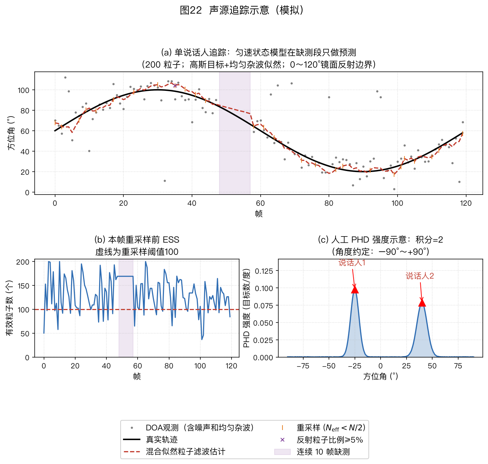
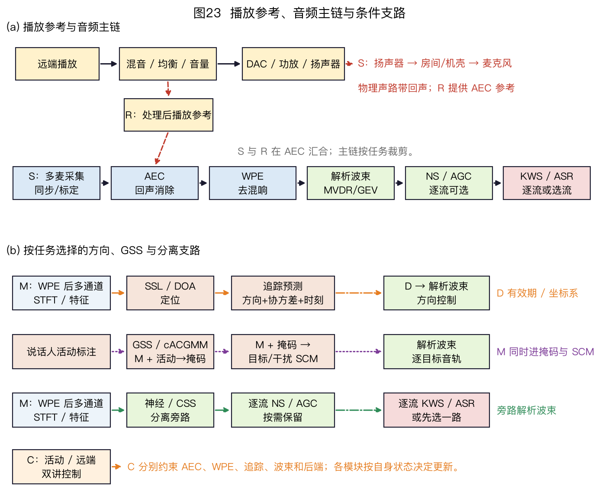
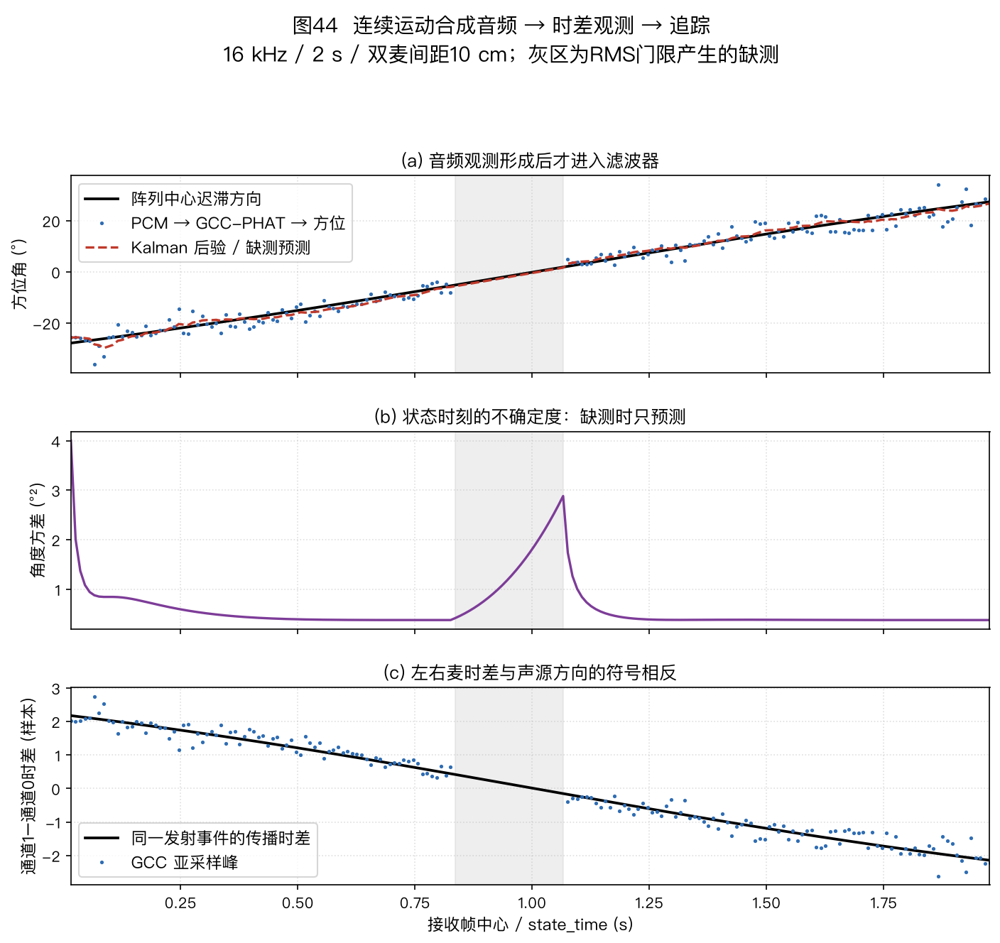
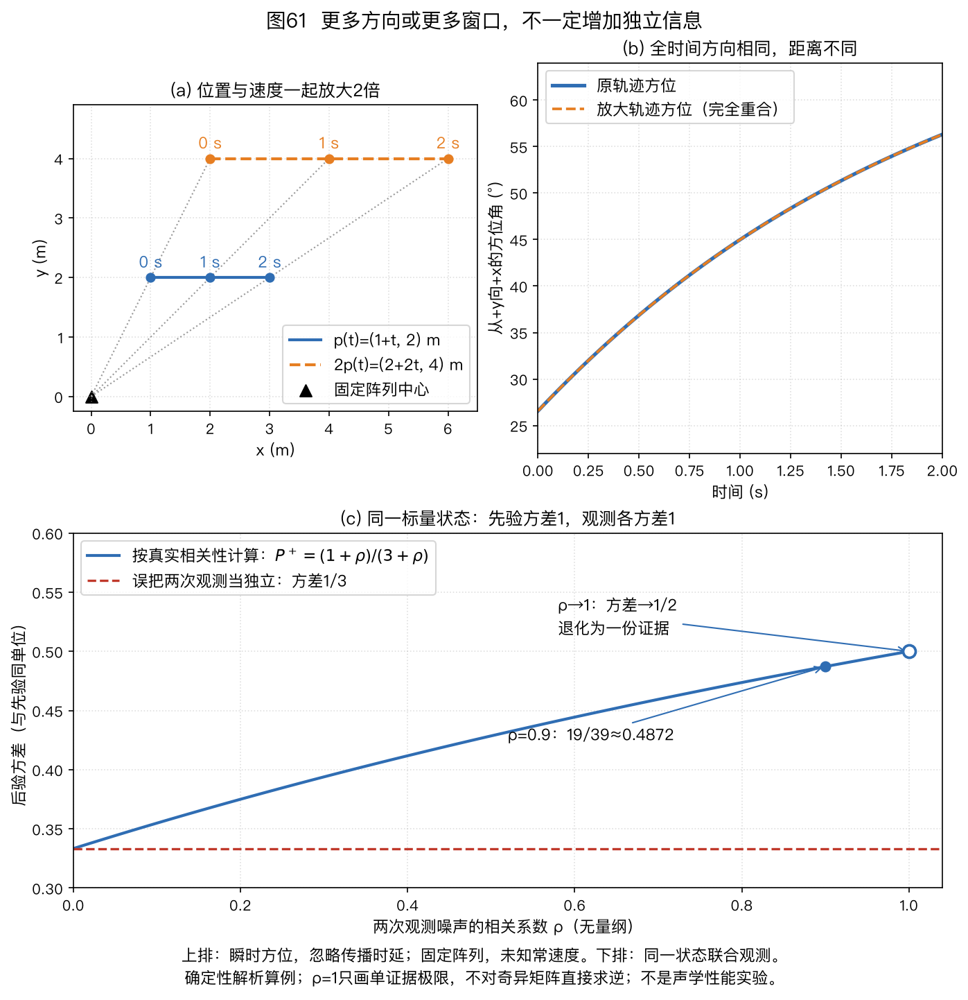

本页目录
⚠️ 本篇是教程正文第 9 章（正文共 11 章，另有两篇扩展专题和附录 A/B），可独立阅读，前后篇见下方导航。
🏠 首页导读：🏠 导读与导航 ｜ 上一篇：第 8 章 · 语音分离 ｜ 下一篇：第 10 章 · 工程实现、评测与产业实践
9. 声源追踪
9.1 问题与声学特殊性
本章最小术语与阅读顺序
第 4 章的定位回答“这一帧声音从哪里来”，本章追踪回答“结合之前的观测，当前方向及其不确定度是什么”。先走通一次卡尔曼递推，再读粒子权重与多目标关联；最后检查状态时间戳，避免把过去方向当成现在方向。
| 术语 | 本章含义 |
|---|---|
| 波达方向（Direction of Arrival，DOA） | 相对指定阵列坐标系的声源方向 |
| 语音活动检测（Voice Activity Detection，VAD） | 判断当前是否有语音证据，不等于判断人是否离场 |
| 状态、观测、新息 | 要估计的量、定位器给的量、观测减去预测观测 |
| 先验、后验 | 本次观测更新前、更新后的状态分布 |
| 协方差 | 误差的二阶统计；对角线为方差，非对角线为误差间相关项 |
| 轨迹标签 | 系统维护的持续标识，不自动等于永久说话人身份 |
方向状态、位置状态与可观测性
声源追踪把含噪且可能间断的逐帧定位结果融合成连续轨迹，再为波束形成提供抖动较小的因果方向估计。状态要随观测和任务选择：只跟踪方位时可用 $[\theta_t,\dot\theta_t]^\top$；需要描述加速可加入 $\ddot\theta_t$；要跟踪平面位置则可用 $[x_t,y_t,\dot x_t,\dot y_t]^\top$。角度状态的分量分别以角度、角速度和角加速度为单位，位置状态则要另定坐标系和速度单位。
LOCATA 官方任务页列出静止或运动声源与阵列的六类任务。其开发集公开多通道录音以及麦克风和声源位置真值；任务页对评测集只列出录音和麦克风位置真值，不能据此假定评测声源真值也公开。自行计算逐帧声源定位或追踪误差须选择实际带声源真值的数据，并按任务编号区分单源/多源、静止/运动和阵列配置；数据选择的一般原则见 §10.6。
声学追踪有四个特点：
- 说话人停顿会造成间歇观测，可用语音活动检测辅助观测门控，并需要轨迹维持；
- 混响会产生非高斯误差和野点；
- 声源数会随时间变化；
- 波达方向（Direction of Arrival，DOA）与笛卡尔位置之间是非线性关系。
若状态为平面位置与速度 $[x,y,\dot x,\dot y]$，阵列中心为 $(x_0,y_0)$，沿用第 2～5 章从 $+y$ 轴向 $+x$ 轴为正的方位角约定，则观测函数为 $\theta=\operatorname{atan2}(x-x_0,y-y_0)$。这里 atan2 的第一个参数是正弦分量，第二个是余弦分量；不能直接照搬以 $+x$ 轴为零点的数学极角顺序。
例如阵列中心在原点，声源在 $(1\ \mathrm m,2\ \mathrm m)$ 时，本书方位角是 $\operatorname{atan2}(1,2)\approx26.565^\circ$；交换参数得到 $\operatorname{atan2}(2,1)\approx63.435^\circ$，那是另一套零点约定。两者都能描述位置，但定位、追踪与波束控制必须先统一约定，不能直接互传。
单个固定阵列的一次方位观测不能确定距离。令阵列中心为 $(0,0)$，声源在 $(1\ \mathrm m,1\ \mathrm m)$ 与 $(2\ \mathrm m,2\ \mathrm m)$ 时都得到 $45^\circ$；沿同一射线缩放位置不会改变 atan2 的结果。
连续仅测方位观测只有在已知运动约束和足够的阵列—声源相对运动使系统可观测时，才可能逐步估计距离。否则，即使用扩展卡尔曼滤波（Extended Kalman Filter，EKF）或无迹卡尔曼滤波（Unscented Kalman Filter，UKF），径向位置仍不能由滤波器自行产生。
在忽略传播时延的瞬时方位模型中，固定阵列观测未知常速度目标时，把初始位置与速度同时乘同一个正数，会在整个时间轴上保持方位相同；E09-21给出完整三时刻反例。增加观测帧数可以减小已可观测方向的误差，但不能消除该模型的尺度歧义。
位置级追踪通常还要引入已知中心不同的多个阵列、到达时间差（Time Difference of Arrival，TDOA）或距离观测，或利用满足可观测条件的移动阵列轨迹。仅测方位可观测性分析。
EKF 用该观测函数的雅可比做一阶线性化。UKF 的另一种办法是：在当前估计的均值周围选出少量代表性状态点，把每个点分别代入原来的非线性观测函数，再由变换后的点重算均值和协方差。这些代表性点称为 sigma 点，并不是另外观测到的声源。
标准对称或缩放无迹变换的 UKF 通常传播 $2L+1$ 个 sigma 点；对位置—速度状态 $[x,y,\dot x,\dot y]^\top$，状态维数 $L=4$，因此是 9 个点。单纯方位—角速度状态只有 $L=2$，对应 5 个点。也有单纯形、球面径向等减少点数的变体，不能把 $2L+1$ 写成所有 UKF 的定义。
近距离或声源越过阵列附近时非线性更强，应比较 UKF、粒子滤波或其他非线性方法。在声源与阵列中心重合处，方位角本身无定义；换滤波器不能修复这个几何奇点。后文从线性卡尔曼滤波（Kalman Filter，KF）开始，再展开非线性观测。
9.2 单目标追踪
9.2.1 卡尔曼预测、观测更新与角度边界
状态与观测模型写为
$$\begin{aligned} \vec s_t&=\mathbf F\vec s_{t-1}+\vec v_t,\\ \vec z_t&=\mathbf H\vec s_t+\vec w_t. \end{aligned}\tag{9-1}$$
其中 $\mathbf F\in\mathbb R^{d\times d}$ 是运动转移矩阵，$\mathbf H\in\mathbb R^{p\times d}$ 把 $d$ 维状态映射到 $p$ 维观测；$\vec v_t$、$\vec w_t$ 分别是过程噪声、观测噪声。
本节假定两者零均值、跨时刻为白噪声，彼此及与初始估计误差不相关。于是 $\mathbf Q=E[\vec v_t\vec v_t^\top]$ 与 $\mathbf R=E[\vec w_t\vec w_t^\top]$ 才分别是 $d\times d$、$p\times p$ 协方差。
若噪声有非零均值，应显式建模偏置；若存在相关噪声，下面被省略的交叉协方差项需要恢复。
$\hat{\vec s}_t^-$ 和 $\mathbf P_t^-$ 表示本次观测前的预测均值、误差协方差；不带减号的 $\hat{\vec s}_t,\mathbf P_t$ 表示更新后结果。$\mathbf P$ 为 $d\times d$，增益 $\mathbf K$ 为 $d\times p$。在这些二阶统计条件下，线性递推具有线性最小均方误差意义；进一步假定初态与噪声联合高斯，后验由均值和协方差完整描述，递推也是贝叶斯条件均值。经典起点见 Kalman 1960 原文的 Optimal Estimates 与 Theorem 3。
协方差元素的单位由对应状态分量相乘决定。例如 $[\theta,\dot\theta]^\top$ 的对角线单位分别是 $\mathrm{deg}^2$ 和 $(\mathrm{deg/frame})^2$。若定位器只输出角度，$\vec z_t$ 退化为标量 $\theta_t^{obs}$，$\vec w_t$ 是观测噪声，$\mathbf R$ 也退化为角度方差。
三分量角运动状态 $[\theta,\dot\theta,\ddot\theta]^\top$ 使用 $\mathbf H=[1,0,0]$，不是三维空间位置状态。下文两分量状态 $[\theta,\dot\theta]^\top$ 使用 $\mathbf H=[1,0]$；若速度以度/帧计，角度—速度互协方差的单位是度²/帧。
贝叶斯递推包含预测和更新。预测阶段依据运动模型外推状态，并增加因过程噪声带来的不确定度；更新阶段用观测与预测之差，即新息，修正状态和协方差。在线性高斯假设下，卡尔曼滤波给出这两个阶段的闭式递推。
卡尔曼滤波（KF）的五步递推（状态取 [角度, 角速度]）：
-
预测状态：
$$\hat{\vec{s}}^-_t = \mathbf{F}\hat{\vec{s}}_{t-1}\text{。}\tag{9-2}$$
-
预测协方差：
$$\mathbf{P}^-_t = \mathbf{F}\mathbf{P}_{t-1}\mathbf{F}^\top + \mathbf{Q}\text{。}\tag{9-3}$$
$\mathbf F$ 先把上一帧协方差传播到当前状态，$\mathbf Q$ 再加入未建模运动的过程噪声。不能据此断言任意 $\mathbf F$ 下每个协方差元素都必然增大；本章的无观测匀速数例中，角度方差会增大。
-
计算卡尔曼增益：
$$\begin{aligned} \mathbf S_t&=\mathbf H\mathbf P_t^-\mathbf H^\top+\mathbf R,\\ \mathbf K_t&=\mathbf P_t^-\mathbf H^\top\mathbf S_t^{-1}. \end{aligned}\tag{9-4}$$
$\mathbf R$ 是式(9-1)定义的观测噪声协方差。对标量角观测，在另一项固定时，较小的观测方差会增大角度增益，较小的预测角度方差会减小角度增益。这个直觉不能直接解释一般矩阵增益的每个元素。
-
更新状态：
$$\begin{aligned} \nu_t&=\theta_t^{obs}-\mathbf H\hat{\vec s}_t^-,\\ \hat{\vec s}_t&=\hat{\vec s}_t^-+\mathbf K_t\nu_t. \end{aligned}\tag{9-5}$$
第一行的差称为新息（innovation），即观测与预测观测之差；$S_t$ 是它的协方差。
-
更新协方差：
$$\mathbf{P}_t = (\mathbf{I}-\mathbf{K}_t\mathbf{H})\mathbf{P}^-_t\text{。}\tag{9-6}$$
方位角跨越表示区间边界时，新息不能直接相减。若角度约定为 $[-180^\circ,180^\circ)$，定义
$$\begin{aligned} b&=\alpha+180^\circ,\\ r&=b\bmod360^\circ,\\ \operatorname{wrap}_{180}(\alpha)&=r-180^\circ. \end{aligned}\tag{9-7}$$
并在第 4 步使用 $\operatorname{wrap}_{180}(\theta_t^{obs}-\mathbf H\hat{\vec s}_t^-)$。预测和更新完成后，还应把状态中的角度分量按式(9-7)映射回同一表示区间；角速度等非角度分量不做环绕。
式(9-7)定义精确的模运算。浮点实现先把输入角度映射到规范区间，再作差并环绕；已在区间内的小角度应保持原值，不能因先加180°而被舍入成零。大角度的输入本身若已丢失精细角差，环绕也不能恢复它。
这个操作没有把局部高斯模型变成任意圆周分布模型：后验跨越多个方向或接近对跖歧义时，应保留多峰或圆统计表示。
例如预测为 $+179^\circ$、观测为 $-179^\circ$，直接相减得到 $-358^\circ$，最短圆周角差却是 $+2^\circ$。不做环绕会让滤波器沿错误方向大幅更新，门控也可能把正确观测判成野点。
若设备只搜索一个不跨边界的有限扇区，则应使用该扇区的边界模型，不能把 $-180^\circ$ 与 $+180^\circ$ 自动视为相邻。
式(9-6)便于手算；浮点实现可使用数值上更稳健的 Joseph 形式
$$\begin{aligned} \mathbf A_t&=\mathbf I-\mathbf K_t\mathbf H,\\ \mathbf P_t&=\mathbf A_t\mathbf P_t^-\mathbf A_t^\top\\ &\quad+\mathbf K_t\mathbf R\mathbf K_t^\top. \end{aligned}\tag{9-8}$$
式(9-6)与式(9-8)在精确算术和标准卡尔曼增益下等价。Joseph 形式把两个半正定项相加，更不容易因舍入误差得到不对称或负方差；实现中仍应检查 $\mathbf P_t$ 的对称性和最小特征值。
增益为什么按不确定度加权
先把状态压成一个标量，令 $e^-=s-\hat s^-$，观测为 $z=s+w$。采用 $\hat s^+=\hat s^-+k(z-\hat s^-)$ 后，误差为 $(1-k)e^- -kw$。零均值且 $e^-,w$ 不相关时，交叉项期望为零：
$$\begin{aligned} J(k)&=E[(s-\hat s^+)^2]\\ &=(1-k)^2P^-+k^2R,\\ J'(k)&=-2(1-k)P^-+2kR,\\ k_*&=\frac{P^-}{P^-+R}. \end{aligned}\tag{9-9}$$
例如 $P^-=4,R=1$，得 $k_*=4/5$，代回得 $P^+=4/5$。高可信观测占较大权重，是误差方差最小化的结果；如果观测带有未建模偏差，把 $R$ 调小反而可能强化偏差。矩阵增益最小化相应误差协方差，Joseph 形式就是该误差外积的展开。
新息门控与协方差有效性
新息应与自己的预测尺度比较。令 $\vec\nu$ 为 $p$ 维新息，$\mathbf S$ 为它的协方差，归一化新息平方（Normalized Innovation Squared，NIS）定义为
$$\begin{aligned} \epsilon_\nu&=\vec\nu^\top\mathbf S^{-1}\vec\nu,\\ p=1:\quad\epsilon_\nu&=\nu^2/S. \end{aligned}\tag{9-10}$$
线性高斯模型、正确关联且协方差匹配时，NIS 服从自由度为 $p$ 的卡方分布。可按允许的拒真概率选门限；单个观测落在门内不等于“该观测正确的概率”。混响假峰、多峰定位和错关联会破坏前提，仍要用相符数据标定。E09-05 检查角度环绕，E09-17 检查单位变化后 NIS 不变。
合法协方差必须对称半正定。Joseph 形式减少舍入问题，但不能修复错误的负方差输入。实现应先拒绝非法对角方差；若只恢复舍入量级的不对称或微小负特征值，要明确容差和恢复操作，不能接受后原样当作物理协方差传播。
9.2.2 算例 9-1：卡尔曼滤波单步复算
以下本书手算描述相对阵列方位缓慢变化的移动声源。说话人只转动头部而位置不变，不自动产生这里的 DOA 轨迹。
下面用一组数值复算式(9-2)至式(9-6)。状态向量取 §9.1 三分量角运动状态的两分量简化版 $\vec{s}=[\theta,\dot\theta]^{\top}$，单位分别为度和度/帧。该模型省略加速度，适合运动较平缓的示例；频繁机动时可改用含加速度的模型或后文的交互多模型（Interacting Multiple Model，IMM）。已知：
- 上一帧估计：$\hat{\vec{s}}_{t-1}=[30,\ 0.5]^{\top}$（目标在 30°，每帧向右走 0.5°）；
- 上一帧不确定度：$\mathbf{P}_{t-1}=\begin{bmatrix}4&0\\0&0.25\end{bmatrix}$（角度方差 4°²，即标准差 2°；角速度方差 0.25）；
- 状态转移矩阵（匀速模型）：$\mathbf{F}=\begin{bmatrix}1&1\\0&1\end{bmatrix}$（“新角度 = 旧角度 + 1 帧 × 角速度，角速度不变”的矩阵写法）；
- 过程噪声：$\mathbf{Q}=\begin{bmatrix}0.1&0\\0&0.01\end{bmatrix}$（“目标其实会乱动”的程度，$\mathbf{Q}$ 越大滤波器越不敢信自己的预测）；
- 观测矩阵：$\mathbf{H}=[1,\ 0]$（DOA 算法只报角度，不报角速度）；
- 本帧观测：$\theta^{obs}_t=32°$；观测噪声 $\mathbf{R}=25$（标准差 5°，反映单帧 DOA 估计相当粗糙）。
第 1 步：预测 $\hat{\vec{s}}^-_t=\mathbf{F}\hat{\vec{s}}_{t-1}$
$$\begin{aligned} \hat{\vec s}_t^-&=\begin{bmatrix}1&1\\0&1\end{bmatrix} \begin{bmatrix}30\\.5\end{bmatrix}\\ &=\begin{bmatrix}30+.5\\.5\end{bmatrix} =\begin{bmatrix}30.5\\.5\end{bmatrix}. \end{aligned}$$
“他上一帧在 30°、每帧走 0.5°，这帧大概到 30.5°。”
第 2 步：预测的不确定度 $\mathbf{P}^-_t=\mathbf{F}\mathbf{P}_{t-1}\mathbf{F}^{\top}+\mathbf{Q}$
先算 $\mathbf{F}\mathbf{P}_{t-1}=\begin{bmatrix}1&1\\0&1\end{bmatrix}\begin{bmatrix}4&0\\0&0.25\end{bmatrix}=\begin{bmatrix}4&0.25\\0&0.25\end{bmatrix}$（第一行：$1\times4+1\times0=4$，$1\times0+1\times0.25=0.25$；第二行照算）。
再乘 $\mathbf{F}^{\top}=\begin{bmatrix}1&0\\1&1\end{bmatrix}$：
$$\begin{aligned} \mathbf{F}\mathbf{P}_{t-1}\mathbf{F}^{\top} &=\begin{bmatrix}4&0.25\\0&0.25\end{bmatrix}\begin{bmatrix}1&0\\1&1\end{bmatrix}\\ &=\begin{bmatrix}4+.25&.25\\.25&.25\end{bmatrix}\\ &=\begin{bmatrix}4.25&0.25\\0.25&0.25\end{bmatrix}. \end{aligned}$$
左上角从 4 增加到 4.25，因为角速度的不确定度会在预测后传播到角度。再加上 $\mathbf Q$：
$$\begin{aligned} \mathbf P_t^-&=\begin{bmatrix}4.25&.25\\.25&.25\end{bmatrix} +\begin{bmatrix}.1&0\\0&.01\end{bmatrix}\\ &=\begin{bmatrix}4.35&.25\\.25&.26\end{bmatrix}. \end{aligned}$$
即预测的角度不确定度为标准差 $\sqrt{4.35}\approx2.09°$。
第 3 步：卡尔曼增益 $\mathbf{K}_t=\mathbf{P}^-_t\mathbf{H}^{\top}(\mathbf{H}\mathbf{P}^-_t\mathbf{H}^{\top}+\mathbf{R})^{-1}$
$\mathbf{H}\mathbf{P}^-_t\mathbf{H}^{\top}$ 只是取出 $\mathbf{P}^-_t$ 的左上角元素 $4.35$（因为 $\mathbf{H}=[1,0]$ 起到“挑出角度分量”的作用），于是分母是标量：
$$\mathbf{H}\mathbf{P}^-_t\mathbf{H}^{\top}+\mathbf{R}=4.35+25=29.35$$
分子 $\mathbf{P}^-_t\mathbf{H}^{\top}=\begin{bmatrix}4.35&0.25\\0.25&0.26\end{bmatrix}\begin{bmatrix}1\\0\end{bmatrix}=\begin{bmatrix}4.35\\0.25\end{bmatrix}$（取 $\mathbf{P}^-_t$ 的第一列）。
$$\mathbf{K}_t=\frac{1}{29.35}\begin{bmatrix}4.35\\0.25\end{bmatrix}\approx\begin{bmatrix}0.148\\0.0085\end{bmatrix}$$
中间值分别为 0.1482 和 0.00852，这里保留三位和两位有效数字。
增益是 $2\times1$ 向量：$K_1=0.148$（角度分量信观测的比例）、$K_2=0.0085$（角速度分量分到的一点残差信息——观测虽只报角度，但角度残差里也藏着“速度估偏了”的线索）。
$K_1\approx0.148$ 表示角度更新量取新息的约 14.8%。观测噪声方差 25 大于预测角度方差 4.35，因此估计更接近预测值。若 $\mathbf R$ 减小，$K_1$ 会增大，观测对更新的影响也会增加。
第 4 步：更新 $\hat{\vec{s}}_t=\hat{\vec{s}}^-_t+\mathbf{K}_t(\theta^{obs}_t-\mathbf{H}\hat{\vec{s}}^-_t)$
新息（innovation，观测与预测之差）为 $\theta^{obs}_t-\mathbf{H}\hat{\vec{s}}^-_t=32-30.5=1.5°$。
$$\begin{aligned} \hat{\vec s}_t&=\begin{bmatrix}30.5\\0.5\end{bmatrix} +\frac{1.5}{29.35}\begin{bmatrix}4.35\\0.25\end{bmatrix}\\ &\approx\begin{bmatrix}30.722317\\0.512777\end{bmatrix}. \end{aligned}$$
角度由预测值向观测值修正约 0.22°，角速度更新为 0.513°/帧。最终角度 30.72° 位于预测值 30.5° 与观测值 32° 之间，并因 $K_1$ 较小而更接近预测值。
第 5 步：更新的不确定度 $\mathbf{P}_t=(\mathbf{I}-\mathbf{K}_t\mathbf{H})\mathbf{P}^-_t$
计算协方差时保留未舍入的增益 $\mathbf K=[4.35,0.25]^\top/29.35$。前面显示的 0.148 和 0.0085 只用于展示，不能再当成精确数代入。于是
$$\mathbf{I}-\mathbf{K}_t\mathbf{H}=\begin{bmatrix}25/29.35&0\\-0.25/29.35&1\end{bmatrix}$$
$$\begin{aligned} \mathbf P_t&=(\mathbf I-\mathbf K_t\mathbf H)\mathbf P_t^-\\ &\approx\begin{bmatrix}3.705&.213\\.213&.258\end{bmatrix}. \end{aligned}$$
逐项计算得到 $P_{11}=25\times4.35/29.35\approx3.705281$，$P_{12}=P_{21}=25\times0.25/29.35\approx0.212947$，$P_{22}=0.26-0.25^2/29.35\approx0.257871$；上面的矩阵最后才舍入到三位小数。若提前用 0.852 计算，$0.852\times4.35=3.7062$，会改变显示的末位，且两条路径计算的非对角项可能不再相等。
角度方差从 4.35 降到 3.71（标准差约 1.93°）。在线性模型、协方差和卡尔曼增益满足本节条件时，观测更新降低或保持估计协方差；错误观测或错误噪声模型仍可能让真实误差增大。
若下一帧说话人停顿没有观测，就只做第 1、2 步：本例角度方差再次增大，波束指向维持外推，这就是“静默保持”（§9.4）。
固定增益与单目标方法的选择
算例 9-1 说明了单步卡尔曼递推。下表比较常见单目标追踪方法的假设、计算量和适用条件。
α-β / α-β-γ 滤波器采用固定更新增益，因而在线更新可以不反复求解 Riccati 递推。如果模型、采样周期和噪声统计恒定，且固定增益取为对应卡尔曼滤波的稳态增益，它可以等价于该模型下的稳态卡尔曼滤波。
经验选取的固定增益不保证这种最优性；模型或噪声条件变化时，固定增益也不会自行重新适配。α-β 的稳态关系见 Ekstrand, Some Aspects on Filter Design for Target Tracking, §9.1；α-β-γ 的增益稳定性和优化条件见 Kosuge 与 Ito, Stability of an α-β-γ Filter and Optimal Gains, 2002。
| 方法 | 原理 | 优点 | 缺点 | 适用 |
|---|---|---|---|---|
| 滑动平均/中值/直方图众数 | 平均为线性平滑；中值/众数为非线性汇总 | 结构简单，不需递推协方差 | 隐含局部平稳假设；延迟大、跟不上机动、多源混杂 | 目标缓慢、观测较密时的基线 |
| α-β / α-β-γ | 用固定增益修正位置、速度（及加速度）预测 | 在线不必反复求 Riccati 递推 | 经验增益未必最优；统计条件变化时不能自行适配 | 采样周期和运动条件较稳定、资源受限的单目标追踪 |
| 卡尔曼滤波 KF | 高斯线性贝叶斯递推（预测+新息加权更新） | 在线性高斯模型正确时得到最小均方误差估计 | 稠密实现随状态维数 $d$、观测维数 $p$ 约为 $O(d^3+p^3)$；标量 DOA 更新可更低，但仍需在目标硬件计时；抗野点差、需调 Q/R | 观测质量较好且模型近似成立 |
| EKF（扩展卡尔曼滤波）/UKF（无迹卡尔曼滤波） | 一阶线性化/无迹变换处理非线性 | 可处理位置到角度的非线性观测 | EKF 对线性化误差敏感；标准对称/缩放 UKF 常传播 $2L+1$ 个 sigma 点，其他变体点数不同 | 分布式阵列位置级追踪 |
| IMM 交互多模型 | 按模式转移概率混合各模型初始状态，再分别预测、更新，以新息似然更新模式权重并融合 | 可在多个预设运动模式之间平滑切换 | 计算量随模型数增加；未包含的运动模式仍会失配，且需标定模型转移概率 | 包含启动、停止和匀速段的机动场景 |
| 粒子滤波（Particle Filter，PF）/序贯重要性重采样（Sequential Importance Resampling，SIR） | 带权粒子近似后验；预测、加权、按需重采样 | 能表示非线性、非高斯和多峰后验 | 鲁棒性取决于似然与杂波模型；会权重退化和样本贫化 | 观测多峰或运动模型明显非线性 |
9.2.3 运动模型切换与非线性观测
匀速、加速和停走描述运动规律；EKF/UKF 描述非线性变换怎样传播不确定度。这是两个不同选择，IMM 的某个模式内部也可以使用 EKF 或 UKF。
非等间隔运动与过程噪声
以秒为时间单位，局部角状态为 $[\theta,\dot\theta]^\top$。若角速度受连续白角加速度驱动，噪声强度为 $q$，一段间隔 $h>0$ 的转移与离散协方差为
$$\begin{aligned} \mathbf F(h)&=\begin{bmatrix}1&h\\0&1\end{bmatrix},\\ \mathbf Q(h)&=q\begin{bmatrix}h^3/3&h^2/2\\h^2/2&h\end{bmatrix}. \end{aligned}\tag{9-11}$$
角度用度时，$q$ 的单位是度²/秒³。E09-04 从积分推导该式，并与“每个间隔内恒定的随机加速度”区分；E09-18 验证两小步与一大步的统计一致性。随意改变帧间隔却保持同一个数值 $\mathbf Q$，等于改变了运动噪声模型。
EKF：对本书方位约定求导
令 $a=x-x_0,b=y-y_0,r^2=a^2+b^2$。观测 $h(\vec s)=\operatorname{atan2}(a,b)$ 以弧度输出；在预测状态处作一阶展开，位置—速度状态的观测雅可比为
$$\begin{aligned} \mathbf H_t&=\left.\frac{\partial h}{\partial\vec s}\right|_{\hat{\vec s}_t^-}\\ &=\begin{bmatrix}b/r^2&-a/r^2&0&0\end{bmatrix},\\ \nu_t&=\operatorname{wrap}_{\pi}\!\left(z_t-h(\hat{\vec s}_t^-)\right). \end{aligned}\tag{9-12}$$
这里 $\operatorname{wrap}_{\pi}$ 是把弧度映射到 $[-\pi,\pi)$ 的对应操作。前两个导数的单位是弧度/米；若观测用度，整个雅可比乘 $180/\pi$，$R$ 也改为度²。用该雅可比计算 $S$ 与增益，再按非线性预测观测形成新息，不能把 $\mathbf H\hat{\vec s}^-$ 当作一般非线性函数值。
在 $(1,2)$ m，两个位置导数为 $[.4,-.2]$；E09-10 给出完整一步。越接近 $r=0$，导数越敏感；原点方位无定义，不能靠增大迭代次数得到方向。预测远离真实状态、后验跨多个方向时，局部一阶近似也可能失效。
UKF：传播代表点与非线性矩
无迹变换（Unscented Transform，UT）把均值 $\vec m$ 与协方差 $\mathbf P$ 编码成代表点，再通过原函数。对 $L$ 维欧氏状态，常用缩放构造取 $\lambda=\alpha^2(L+\kappa)-L$，要求 $L+\lambda>0$。若矩阵 $\mathbf A$ 满足 $\mathbf A\mathbf A^\top=(L+\lambda)\mathbf P$，令 $\vec A_i$ 为第 $i$ 列。下式非中心点的索引均为 $i=1,\ldots,L$，其配对点为 $i+L$；权重的非中心索引为 $i=1,\ldots,2L$：
$$\begin{aligned} \vec\chi_0&=\vec m,\\ \vec\chi_i&=\vec m+\vec A_i,\\ \vec\chi_{i+L}&=\vec m-\vec A_i,\\ W_0^{(m)}&=\lambda/(L+\lambda),\\ W_0^{(c)}&=W_0^{(m)}+1-\alpha^2+\beta,\\ W_i^{(m)}&=W_i^{(c)}\\ &=\frac{1}{2(L+\lambda)} . \end{aligned}\tag{9-13}$$
$\alpha,\kappa$ 控制点的尺度，$\beta$ 调整协方差中心权重；权重可以为负，sigma 点不是带非负概率的粒子。设欧氏观测函数输出列向量 $\vec y_i=h(\vec\chi_i)$，变换均值与协方差为
$$\begin{aligned} \bar{\vec y}&=\sum_i W_i^{(m)}\vec y_i,\\ \delta \vec y_i&=\vec y_i-\bar{\vec y},\quad\delta\vec s_i=\vec\chi_i-\vec m,\\ \mathbf S_y&=\sum_iW_i^{(c)}\delta \vec y_i\delta \vec y_i^\top,\\ \mathbf P_{sy}&=\sum_iW_i^{(c)}\delta\vec s_i\delta \vec y_i^\top. \end{aligned}\tag{9-14}$$
加入观测噪声后使用 $\mathbf S=\mathbf S_y+\mathbf R$、$\mathbf K=\mathbf P_{sy}\mathbf S^{-1}$ 更新状态。角度观测还需与圆周一致的均值、差值和局部表示；不能直接平均 179° 与 −179°。半正定矩阵的平方根、负权重和宽分布也需要数值检查。
E09-11 用 $h(x)=x^2$ 显示 UT 能恢复 EKF 一阶展开丢掉的二阶信息，同时展示正负号仍不可辨。它不证明 UKF 对任意非线性都精确或都优于 EKF。方法背景见 Julier 与 Uhlmann, Unscented Filtering and Nonlinear Estimation, 2004。
IMM：先交互，再预测与更新
交互多模型（Interacting Multiple Model，IMM）适合在预设的静止、匀速、加速等模式之间切换。“交互”是每次预测前，各模式按转移概率接收其他模式的状态信息，并非各跑各的、最后只平均输出。
设旧模式概率为 $\mu_i$，行随机转移矩阵 $\mathbf T$ 的元素 $T_{ij}=\Pr(j\mid i)$，各模式状态具有相同维度和坐标。令 $c_j$ 是新模式的先验概率、$\omega_{i|j}$ 是已知新模式后旧模式的条件概率。对可达模式 $c_j>0$，
$$\begin{aligned} c_j&=\sum_i\mu_iT_{ij},\\ \omega_{i|j}&=\mu_iT_{ij}/c_j,\\ \vec x_j^0&=\sum_i\omega_{i|j}\vec x_i,\\ \vec\delta_{ij}&=\vec x_i-\vec x_j^0,\\ \mathbf P_j^0&=\sum_i\omega_{i|j} \left(\mathbf P_i+\vec\delta_{ij}\vec\delta_{ij}^\top\right). \end{aligned}\tag{9-15}$$
最后一项来自全协方差公式：既要计入模式内的不确定度，也要计入不同模式均值的分歧。两个各自很确定但互相矛盾的模式，混合后可能很不确定。E09-09 保留完整分数手算。
从各自 $(\vec x_j^0,\mathbf P_j^0)$ 出发执行模式内预测与观测更新，得到似然 $L_j$。模式后验为
$$\mu_j^+=\frac{c_jL_j}{\sum_k c_kL_k}.\tag{9-16}$$
无观测且不加入其他模式证据时，模式概率应传播到 $c_j$，总体预测也按这些新模式先验融合。最终状态融合仍需均值分歧外积项。不同维状态需要先作显式映射，圆周角需要一致局部展开；不可达模式不能除以零。
模式转移矩阵绑定时间间隔，不能把某帧率下的 0.9 或 0.95 直接搬到任意帧率。只有预设模式覆盖了实际运动，模式似然和转移概率又合理时，IMM 才能有效解释机动；它不会自动发现任意新运动规律。
9.2.4 算例 9-2：粒子加权与重采样
卡尔曼滤波用均值和协方差表示单峰高斯后验。粒子滤波（particle filter，PF）用 $N$ 个带权样本近似后验，可以表达偏斜或多峰分布。它并不会自动抵抗观测野点：若似然模型把野点当成高置信观测，粒子权重仍会被错误观测拉偏。鲁棒性来自观测门控、重尾似然或“目标加均匀杂波”的混合似然。下面用 10 个粒子演示加权与重采样。
采用状态转移作为提议分布的 bootstrap 粒子滤波，先从旧粒子传播到 $x_t^{(i)}$，再乘本次似然。定义未归一权重 $a_t^{(i)}$，有
$$\begin{aligned} a_t^{(i)}&=w_{t-1}^{(i)}g(z_t\mid x_t^{(i)}),\\ w_t^{(i)}&=\frac{a_t^{(i)}}{\sum_j a_t^{(j)}}. \end{aligned}\tag{9-17}$$
非均匀旧权重不能丢掉；一般提议分布还要乘状态转移密度与提议密度之比。E09-07 展示两次观测的差别。
实际计算持续保存对数权重，每次加上本次对数似然后归一化。线性显示中一个很小的正权重可能下溢成0，但其有限对数权重仍属于支持集；不能下一帧再把这个显示值当作数学零先验。显式设为零的先验和重采样后被丢弃的候选则没有保留质量，两者区别见 E09-12。
设本帧 10 个粒子的角度猜测（单位：度）为：
$$\begin{aligned} (x_1,\ldots,x_5)&=(25,27,28,30,30),\\ (x_6,\ldots,x_{10})&=(31,32,33,35,40). \end{aligned}$$
本帧观测 $\theta^{obs}=31°$，观测噪声标准差 $\sigma=5°$（方差 $\sigma^2=25$）。
第 1 步：根据观测似然计算权重
本例假设预测后的十个粒子具有相同先验权重 $1/10$，例如上一步刚完成重采样。共同的先验因子与高斯密度常数会在归一化时消去，因此下面把未归一化权重直接写成高斯似然的指数部分：离观测越近分越高。若没有重采样且先验权重不同，必须保留上一帧的权重，完整递推和两次观测的反例见 E09-07。
$$\begin{aligned} w_i&=\exp\!\left(-\frac{(x_i-\theta^{obs})^2}{2\sigma^2}\right)\\ &=\exp\!\left(-\frac{(x_i-31)^2}{50}\right). \end{aligned}$$
逐个计算（$(x_i-31)^2$ 先列出来）：
| 粒子 $x_i$ | $(x_i-31)^2$ | $w_i=\exp(-(x_i-31)^2/50)$ |
|---|---|---|
| 25 | 36 | $\exp(-0.72)=0.4868$ |
| 27 | 16 | $\exp(-0.32)=0.7261$ |
| 28 | 9 | $\exp(-0.18)=0.8353$ |
| 30 | 1 | $\exp(-0.02)=0.9802$ |
| 30 | 1 | $\exp(-0.02)=0.9802$ |
| 31 | 0 | $\exp(0)=1.0000$ |
| 32 | 1 | $\exp(-0.02)=0.9802$ |
| 33 | 4 | $\exp(-0.08)=0.9231$ |
| 35 | 16 | $\exp(-0.32)=0.7261$ |
| 40 | 81 | $\exp(-1.62)=0.1979$ |
权重和为
$$\begin{aligned} \sum_{i=1}^{10}w_i &\approx0.4868+0.7261+0.8353\\ &\quad+0.9802+0.9802+1.0000\\ &\quad+0.9802+0.9231\\ &\quad+0.7261+0.1979\\ &=7.8359. \end{aligned}$$
第 2 步：归一化权重
$$\tilde w_i=\frac{w_i}{\sum_jw_j}\approx\frac{w_i}{7.8359}.$$
逐项归一化后得到：
| 粒子序号 $i$ | 角度 $x_i$（度） | 归一化权重 $\tilde w_i$ |
|---|---|---|
| 1 | 25 | 0.0621 |
| 2 | 27 | 0.0927 |
| 3 | 28 | 0.1066 |
| 4 | 30 | 0.1251 |
| 5 | 30 | 0.1251 |
| 6 | 31 | 0.1276 |
| 7 | 32 | 0.1251 |
| 8 | 33 | 0.1178 |
| 9 | 35 | 0.0927 |
| 10 | 40 | 0.0253 |
未舍入的归一化权重之和为 1；表中四位小数相加为 1.0001，是显示舍入，不用于后续计算。40° 是一个远离当前观测的粒子，不是观测野点；它的权重较小，只说明当前高斯似然会压低不符合观测的候选状态，不能证明粒子滤波对错误观测鲁棒。
第 3 步：计算有效粒子数。 对归一化权重，有效样本量（Effective Sample Size，ESS）常用以下近似指标，本文记为 $N_{\rm eff}$：
$$N_{\rm eff}=\frac{1}{\sum_i\tilde w_i^2}.\tag{9-18}$$
$$\begin{aligned} N_{eff}&=\frac{1}{\sum_{i=1}^{10}\tilde w_i^2}\\ &\approx\frac{1}{0.1101}\approx9.08. \end{aligned}$$
若 10 个粒子权重相等，$N_{eff}=10$；若全部权重集中在一个粒子上，$N_{eff}=1$，称为粒子退化。本例得到 9.08。常见实现会在 $N_{eff}$ 低于给定阈值时触发重采样，例如 $N/2$；阈值需要结合粒子数和任务验证。
第 4 步：在重采样前计算本帧估计
$$\begin{aligned} \hat\theta&=\sum_{i=1}^{10}\tilde w_i\,x_i\\ &=0.0621\times25+0.0927\times27+0.1066\times28\\ &\quad+0.1251\times30+\cdots+0.0253\times40\\ &\approx30.65°. \end{aligned}$$
不加权的平均为 31.1°，加权估计约为 30.65°。这个后验均值必须用重采样前的粒子和归一化权重计算。重采样后权重重置为 $1/N$，不能把旧权重再乘到新粒子上；重采样后取均值只是在有限样本下近似同一后验。
第 5 步：为演示算法，强制执行一次系统重采样。本例 $N_{eff}=9.08>N/2=5$，按上一段的示例阈值本来不会触发重采样。下面只为展示系统重采样的索引过程而人为执行一次，不能把它当作阈值判决结果。
系统重采样按归一化权重重新抽取 10 个粒子，允许高权重粒子重复出现，并把新权重统一重置为 $1/10$。
先计算归一化权重的累积和：
| 粒子序号 $i$ | 累积和 $\sum_{j=1}^{i}\tilde w_j$ |
|---|---|
| 1 | 0.0621 |
| 2 | 0.1548 |
| 3 | 0.2614 |
| 4 | 0.3865 |
| 5 | 0.5116 |
| 6 | 0.6392 |
| 7 | 0.7643 |
| 8 | 0.8821 |
| 9 | 0.9747 |
| 10 | 1.0000 |
再从 $[0,0.1)$ 取起点 $u_0=0.0637$，以 0.1 为间隔得到 10 个采样点。对应的新粒子群为：
$$\begin{aligned} (x'_1,\ldots,x'_5)&=(27,28,30,30,30),\\ (x'_6,\ldots,x'_{10})&=(31,32,32,33,35). \end{aligned}$$
30° 和 32° 的粒子被重复抽取，25° 和 40° 的粒子未被抽中。重采样是随机过程，不按单个粒子的权重机械排序；31° 虽有最高单粒子权重，本次仍只保留一份。下一帧先按运动模型传播粒子，再根据新观测重新计算权重。
圆周均值、重采样与野点的不同问题
上例粒子集中在一个不跨边界的小扇区，局部算术均值适用。完整圆周角应先转成单位向量；令 $\phi_i$ 是以弧度表示的粒子角度，定义
$$\begin{aligned} C&=\sum_iw_i\cos\phi_i,\\ S&=\sum_iw_i\sin\phi_i,\\ \bar\phi&=\operatorname{atan2}(S,C),\\ \rho&=\sqrt{C^2+S^2}. \end{aligned}\tag{9-19}$$
$\rho=0$ 时均值方向无定义；接近零时均值不稳定。ESS 检查权重是否集中，$\rho$ 检查方向合向量，两者回答不同问题。等权双峰可以同时具有很高 ESS 和很小 $\rho$；即使均值有定义，也可能落在两个峰之间。E09-12 给出整数角度反例。
重采样只重新分配有限样本，不能创造观测信息，也不负责识别野点。观测门控、重尾或混合似然改变对坏观测的处理；阈值要结合真实误差分布和拒真代价标定。
辅助粒子滤波（Auxiliary Particle Filter，APF）则利用当前观测预选有希望的祖先，再通过重要性权重校正提议分布。它可改善尾部观测下的采样效率，但不保证错误的高斯观测模型自动抗野点。Pitt 与 Shephard 作者章节的结论把采样效率和经验预测分布的尾部可靠性分开讨论；本章实际运行的是所述 SIR 教学例，没有把 APF 作为实测基线。
9.2.5 单目标追踪仿真与缺测边界
图22(a) 为序贯重要性重采样粒子滤波（Sequential Importance Resampling Particle Filter，SIR-PF）递推估计 DOA 的本书仿真。配置如下：
- 真值与观测：真值是 $60^\circ+40^\circ\sin(2\pi t/120)$ 的正弦轨迹；逐帧观测加标准差 $7^\circ$ 的高斯噪声，并以每帧 0.2 的概率将观测替换为 $0^\circ$～$120^\circ$ 均匀野点；
- 缺测：按零起始索引，第 48～57 帧被置为缺测，这 10 帧只执行状态预测；
- 滤波器：使用 200 个粒子和“高斯目标 + 均匀杂波”混合似然，均匀杂波权重为 0.1，角度过程扰动标准差为每步 $1^\circ$，角速度过程扰动标准差为每步 $0.25^\circ/\mathrm{frame}$；
- 初始化与边界：初始角度粒子在允许扇区内均匀采样，不读取未来第一个有效观测。状态只允许落在 $[0^\circ,120^\circ]$ 有限扇区，越界粒子按扇区端点作镜面反射。
镜面反射是便于展示的玩具边界，不是圆周角的 $360^\circ$ 环绕，也不代表真实墙面反射。随机种子为22001，同一随机数生成器依次生成观测与粒子过程；0.2替换概率实际抽中25帧，其中3帧又被置为缺测，留下110个有效观测中的22个杂波。完整逐帧轨迹、ESS、掩码和分母见图22报告。

图22（a）中，灰点为逐帧 DOA 观测，黑线为正弦真值轨迹，红线为粒子滤波估计，紫色阴影标出连续 10 帧缺测，橙色竖线表示有效粒子数低于 $N/2$ 后执行了系统重采样。紫色叉号只标出该帧预测后至少 5% 粒子越界并被镜面反射的时刻，避免用“任一粒子越界”放大单个尾部样本。
缺测段没有似然更新，轨迹只由匀速状态模型与过程噪声外推；$0^\circ$ 与 $120^\circ$ 是采用反射规则的有限扇区边界。
图22（b）显示同一次实验重采样前的 ESS，水平线为100，即 $N/2$。某帧低于阈值是否执行重采样还取决于是否存在有效观测；不能把缺测帧的一次权重数值解释成新增证据。
图22（c）在 −25° 和 +40° 附近人工设置标准差为4°和5°的两个高斯峰，加入非负背景后把全曲线积分归一到2；纵轴单位为目标数/度。它用于说明多目标强度，不是运行 PHD 递推得到的结果。峰数只能近似用于提取人数，严格定义见 §9.3。
单目标追踪由预测和观测更新组成。线性高斯条件下可使用卡尔曼滤波；非线性、多峰或重尾观测可考虑 UKF 或粒子滤波。粒子滤波仍需门控或杂波似然处理野点，IMM 用于多运动模型切换，VAD 用于控制无观测时的更新。
9.3 多目标追踪
9.3.1 数据关联与目标数
多目标追踪需要同时解决观测与轨迹的数据关联，并估计当前的声源数量。
| 方法族 | 代表 | 思想 | 声学表现 |
|---|---|---|---|
| 数据关联+单目标滤波 | 联合概率数据关联（Joint Probabilistic Data Association，JPDA）、多假设跟踪（Multiple Hypothesis Tracking，MHT） | 计算观测属于各轨迹的概率或假设树 | 假设数可能随观测和轨迹数快速增加 |
| 多目标粒子方法 | 粒子关联或联合状态表示 | 将运动、关联或目标数的不确定性分配给相应隐变量 | 不能把所有实现概括成“每目标独立一簇”；复杂度与目标数先验按实际模型核验 |
| 随机有限集（Random Finite Set，RFS）/概率假设密度（Probability Hypothesis Density，PHD）滤波 | PHD、势概率假设密度（Cardinalized PHD，CPHD）、序贯蒙特卡洛 PHD（Sequential Monte Carlo PHD，SMC-PHD） | PHD 传播一阶强度，积分给期望目标数；CPHD 还传播基数分布，峰用于提取状态 | 避免显式枚举关联，但不保留身份；峰提取和参数设置影响结果 Liu et al. 2018 音频强度粒子流例 |
| 标记多伯努利（Labeled Multi-Bernoulli，LMB）/δ-广义标记多伯努利（delta-Generalized Labeled Multi-Bernoulli，δ-GLMB） | 带标签的 RFS | 为目标维护标签、输出带身份轨迹 | 标签管理、假设数和计算量随具体实现而变 |
| 检测前追踪（Track-Before-Detect，TBD） | 对经校准的定位谱或似然场直接递推 | 不先把弱峰硬切成离散观测，可保留阈值以下的证据 | 输入谱必须有跨帧一致的尺度与杂波模型；未经校准的 DNN 分数不能直接当似然 |
| 序列神经网络 | 循环神经网络（Recurrent Neural Network，RNN）/Transformer 处理定位后验序列 | 可学习时间平滑与活动模式 | 仍需训练数据；是否输出稳定身份取决于标签和损失 |
9.3.2 三帧关联手算与方法概览
三帧关联辅助例子。 设两条匀速轨迹的预测角分别为 A：$20^\circ,30^\circ,40^\circ$，B：$60^\circ,50^\circ,40^\circ$；三帧观测依次为 $(22^\circ,58^\circ)$、$(15^\circ,31^\circ,48^\circ)$、$(39^\circ,41^\circ)$。本题把预测观测误差规定为独立高斯、标准差 $\sigma=3^\circ$；一般 KF 的这个尺度应来自新息协方差 $S$，包括预测与测量两部分。为先算清最小 JPDA 归一化，暂时假设第一、三帧没有漏检和杂波，且两个全局关联事件先验相同。
第一帧“顺接”事件的似然正比于 $\exp[-(2^2+(-2)^2)/(2\times3^2)]=e^{-8/18}\approx0.641$；“交换”事件的残差为 $38^\circ,-38^\circ$，似然约为 $e^{-2888/18}$，归一化后的顺接概率在所示精度下为 1。
第三帧两条预测都为 $40^\circ$，两个交换事件的残差平方和都为 $(-1)^2+1^2=2$，似然都为 $e^{-2/18}\approx0.895$。归一化后两个全局事件各为 0.5，因此每条轨迹关联到 $39^\circ$ 或 $41^\circ$ 的边缘概率也各为 0.5。
第二帧多出的 $15^\circ$ 只有在给定检测概率、杂波空间密度和漏检模型后才能得到完整概率；仅比较残差时，近邻两对的指数代价为 $(1^2+(-2)^2)/18=5/18\approx0.278$，但这不是完整 JPDA 后验。
为把这一帧也算完，另设每条轨迹的检测概率 $p_D=0.9$，三个观测处的 Poisson 杂波强度均为 $\kappa=0.01\ \mathrm{deg}^{-1}$，角度似然为 $g(z\mid\theta)=\exp[-(z-\theta)^2/18]/(3\sqrt{2\pi})\ \mathrm{deg}^{-1}$。这组值只是本书算例的输入，不是设备标定值。相对“全部观测来自杂波”的公共因子，令 $A$ 是合法的一对一关联集合，$d=|A|$ 为被检出轨迹数，则
$$\begin{aligned} L(A)&=p_D^d(1-p_D)^{2-d}\\ &\quad\times\prod_{(i,j)\in A} \frac{g(z_j\mid\theta_i)}{\kappa(z_j)},\\ \Pr(A\mid Z)&=\frac{L(A)}{\sum_{A'}L(A')}. \end{aligned}\tag{9-20}$$
未分配观测按杂波处理。分子似然密度与杂波强度必须采用相同观测单位，故 $g/\kappa$ 无量纲；角度从度改成弧度时两者都乘 $180/\pi$，事件概率不变。这里枚举给定观测，不作有限门截断；若引入门内概率 $P_G$，检测概率和截断高斯归一化也要配套处理，不能只删掉门外事件后沿用全部解释。
例如 A 配 $31^\circ$ 的似然比为 $g(31\mid30)/\kappa\approx12.579$，B 配 $48^\circ$ 的比为 $g(48\mid50)/\kappa\approx10.648$。两条都检出的事件权重为 $0.9^2\times12.579\times10.648\approx108.499$；“仅 A 配 $31^\circ$”的权重为 $0.9\times0.1\times12.579\approx1.132$；“仅 B 配 $48^\circ$”为 $0.1\times0.9\times10.648\approx0.958$。
枚举两条轨迹各自漏检或配给三条观测、再排除两轨占用同一观测的情况，共有 $4^2-3=13$ 个合法事件。全部权重之和约为 $110.600$；上述三个事件的归一化概率依次约为 $0.9810$、$0.0102$、$0.0087$，其余十个事件合计约为 $0.0001$。
把包含同一轨迹关联的事件概率相加，A 配 $31^\circ$ 的边缘概率约为 $0.9912$，B 配 $48^\circ$ 的边缘概率约为 $0.9897$。$15^\circ$ 观测在本模型中几乎都由杂波解释；若改变 $p_D$ 或 $\kappa$，这些概率也会改变。
关联后的均值与协方差
JPDA 在每帧枚举满足一对一约束、漏检和杂波模型的联合事件，再把事件概率边缘化到每条轨迹。对一条轨迹，设第 $j$ 个关联条件下的均值、协方差为 $\vec m_j,\mathbf P_j$，边缘概率为 $\beta_j$；$j=0$ 可表示漏检条件。矩匹配结果为
$$\begin{aligned} \bar{\vec m}&=\sum_j\beta_j\vec m_j,\\ \vec\delta_j&=\vec m_j-\bar{\vec m},\\ \bar{\mathbf P}&=\sum_j\beta_j(\mathbf P_j+\vec\delta_j\vec\delta_j^\top). \end{aligned}\tag{9-21}$$
协方差既包括每个条件内的误差，也包括“到底关联到哪个观测”的分歧。只把多个观测平均成一个数再作普通 KF 更新，会丢掉后者。E09-13 算出条件方差0.8、混合方差3.36的例子。
交叉处两条轨迹可能因共享观测向同一均值靠拢，称为轨迹合并现象之一；软关联并不保证持续身份。Fortmann、Bar-Shalom 与 Scheffe 的 JPDA 原文§II式(2.11)–(2.13)给出组合新息与附加协方差项；§III脚注5明确门内概率的简化条件。
多帧假设、标签与检测前追踪
MHT 把第三帧的两种全局历史都暂时保留，等后续观测拉开后再按累计似然和剪枝规则决策，因此可以延迟身份决定，但假设树会增长；若后续观测也始终对称或没有区分身份的证据，保留历史同样不能保证识别身份。MHT 原始论文。这个例子只比较关联机制；实际概率还必须包含检测概率、杂波强度和门控归一化。
LMB/δ-GLMB 为目标维护标签，可输出带身份的轨迹。检测前追踪直接递推定位谱，保留未越过检测阈值的弱证据。
把连续定位谱接入 TBD 前，应先在独立验证集上校准“谱值—似然或似然比”的映射，并固定角度网格、归一化、温度缩放、声源数先验、信噪比与混响条件。网络 softmax 分数只在其类别集合内归一化，不能自动跨帧比较；出生、存活、漏检和杂波参数也要与同一标定口径匹配。若这些条件变化，应重新标定或把分数仅作为特征输入，而不是直接解释为概率。
活动耦合笛卡尔 DOA（Activity-Coupled Cartesian DOA，ACCDOA）把向量方向编码为 DOA、向量长度编码为活动强度。它本身是逐帧声事件定位与检测的输出表示，不等同于追踪器；只有结合时序模型、平滑和身份关联后，才形成轨迹。
PHD 的人数含义、递推和最小手算单独放在下一小节，便于与前面的逐帧数据关联方法对照。
PHD 强度：人数期望与单帧更新
PHD 强度 $D_t(x)$ 也不是“某处有人”的普通概率密度。它在区域 $A$ 上的积分表示该区域内目标数的期望，因而总强度 $\int D_t(x)\,dx$ 给出期望人数；输出整数人数还需另定取整或提取规则。目标位置通常从强度峰或聚类中心提取；“峰数就是人数”只是实现近似。
PHD 避免显式枚举观测—目标关联，但只传播一阶矩，不保留目标身份，也不能完整描述人数分布或目标间相关性。CPHD 进一步传播人数的概率分布；这不意味着它自动获得永久身份。E09-14 用同一强度、不同人数方差说明区别。
下面的递推针对标准独立点目标模型：各目标独立演化，检测事件相互独立，每个被检测目标每帧至多产生一条观测，杂波是与目标观测独立的 Poisson 随机有限集，并忽略由既有目标衍生新目标（spawning）的过程，只用 $\gamma_t$ 表示自发出生；为得到下面的标准闭式更新，还采用 Poisson 型预测多目标分布近似。PHD 的预测式为
令 $s_t(\xi)=p_S(\xi)D_{t-1}(\xi)$ 表示存活后的先验强度，则
$$\begin{gathered} D_{t|t-1}(x)=\gamma_t(x)\\ {}+\int f_t(x\mid\xi)s_t(\xi)\,d\xi. \end{gathered}\tag{9-22}$$
其中 $p_S$ 是存活概率，$f_t$ 是状态转移密度，$\gamma_t$ 是新生目标强度。
给定本帧观测集合 $Z_t$，记 $D_t^-=D_{t|t-1}$。令 $u_t(x)=p_D(x)D_t^-(x)$ 表示可被检测的预测强度，并把某条观测的总解释强度写成 $\eta_t(z)$。标准 PHD 更新为：
$$\begin{gathered} \eta_t(z)=\kappa_t(z)\\ {}+\int g_t(z\mid\xi)u_t(\xi)\,d\xi,\\ D_t(x)=[1-p_D(x)]D_t^-(x)\\ {}+\sum_{z\in Z_t}\frac{g_t(z\mid x)u_t(x)}{\eta_t(z)}. \end{gathered}\tag{9-23}$$
$p_D$ 是检测概率，$g_t(z\mid x)$ 是目标在状态 $x$ 时产生观测 $z$ 的似然，$\kappa_t(z)$ 是杂波强度。第一项保留可能漏检的目标；求和中的每个分母比较“该观测来自杂波”与“来自任一目标”的解释，因此杂波强度越大，单条观测增加的目标强度越少。
用两个离散角度网格做手算。预测强度质量为 $\vec D^-=[0.8,0.6]$，表示两个网格合计期望目标数 1.4；取 $p_D=1$，本帧只有一个观测，在同一离散观测测度下，似然值为 $\vec g=[0.9,0.1]$，杂波强度为 0.1。这里 $\vec D^-$ 是网格质量，若使用连续角度密度，离散积分还须乘网格宽度。分母是 $0.1+0.9\times0.8+0.1\times0.6=0.88$，更新后两个网格的强度质量分别为 $0.72/0.88\approx0.818$ 和 $0.06/0.88\approx0.068$，总和约 0.886。
总和小于 1，是因为这条观测仍有一部分概率由杂波解释；若 $p_D\lt 1$，还要加上第一项的漏检质量。
这个离散例子只解释更新各项，不能替代连续状态中的积分、峰提取和轨迹身份管理。相关混响峰不满足独立杂波假设，扩展目标还可能在一帧产生多条观测；这两类情况需修改似然或杂波模型，或采用相应的扩展目标、多目标滤波模型，不能直接套用上式。
粒子或高斯混合只是表示和计算强度函数的不同方法。目标数由强度积分估计，位置再从峰或聚类中心提取。PHD 原始论文；音频视觉粒子实现见 Liu et al. 2019。
这些方法分别处理关联、目标数或标签，评价时也要分开检查。最优子模式分配距离（Optimal Subpattern Assignment，OSPA）同时度量定位误差和目标数误差，但不评价身份连续性；下一节的交叉实验将单独统计身份错配。
9.3.3 可执行基线与双目标交叉实验
本小节先核对教学接口，再用确定性角度序列区分位置误差与身份错配。
可执行单目标接口与边界
codes/chapters/ch09/core/tracking.py 提供常速度角度 Kalman 滤波器、$[-180^\circ,180^\circ)$ 环绕、系统重采样和圆周角 SIR 粒子滤波器。
ConstantVelocityKalman 的状态单位是 [度, 度/秒]；每帧先用实际秒数 dt 调用 predict()，有观测时再以角度方差调用 update()，缺测时不调用更新。协方差使用 Joseph 形式。它与算例9-1的“度/帧”不同，比较前应转换状态、转移矩阵及过程噪声单位。
CircularParticleFilter 用最短圆周角差的高斯目标项与均匀杂波项混合更新权重，按有效粒子数决定是否系统重采样；它只估计单个圆周角，不包含速度粒子、有限扇区反射或轨迹身份。
该项把最短角差代入普通高斯密度，再与每度 $1/360$ 的均匀项混合。当标准差远小于180°时，高斯落在最短角区间外的质量很小；对任意大的标准差，它在该区间的积分小于1，混合系数不能再直接解释为严格圆周生成模型的杂波概率。因此它是窄角误差的教学近似，不是通用的归一圆周高斯模型。严格宽分布模型须另选环绕正态、归一截断密度或其他圆分布，连同参数含义一起验证。
联合示例用 .venv/bin/python -m codes.chapters.ch00.cross_chapter.ch06_09_baselines 运行，测试见 tests/test_codes_aec_wpe_sep_track.py。测试覆盖 $179^\circ$ 与 $-179^\circ$ 的最短新息、缺测时角度方差增长、Joseph 更新后的对称半正定性、远距离高置信观测的对数权重、退化权重的系统重采样，以及对称后验下未定义的圆周均值。
教学 Kalman 类的过程噪声矩阵 $\mathbf Q$ 已按一次预测间隔离散化；若 dt 改变，不能继续照搬同一个 $\mathbf Q$。粒子后验的圆周合向量接近零时，代码会明确报错，而不是返回由浮点残差决定的任意角度。
这些教学接口采用float64，有限输入不保证所有中间运算都受支持。对已检测到的正方差或概率支持丢失，要安全计算、保留对数状态或明确报错，不能把数值下溢解释为确定状态或零概率；合法的零过程噪声与半正定协方差仍应接受。
如何重算 $\mathbf Q$ 取决于过程噪声模型，练习 E09-04 比较两种不同定义。粒子重采样阈值则按有效粒子数的同一尺度指定：resample_if_needed() 接受 $[0,N]$ 内有限实数，0 表示关闭，默认是 $N/2$；布尔值、数组、负数、超过粒子数或非有限值均报错，且不改变粒子和随机数状态。
设备只搜索有限扇区时不能把两个扇区端点自动接成相邻方向；还需测试迟到/乱序观测、长缺测、错误时间戳、野点门控、目标交叉、轨迹出生/确认/删除、ID 重用和消息超时。E09-23用同一随机游走比较按原时刻回放、丢弃迟到观测与错误的当前时刻更新。无有效观测时只预测并传播协方差，超过有效期后回到搜索模式，不能把外推方向当作新观测。
两目标交叉、短暂缺测与控制限速
tracking_crossing_dropout_demo.py 使用确定的角度观测，不生成语音或设备录音。为便于手算，每步间隔刻意取 1 s；两条轨迹初态分别为 $[20^\circ,+10^\circ/\mathrm s]$、$[60^\circ,-10^\circ/\mathrm s]$，初始协方差都是 $\mathbf I$，每步过程噪声 $\mathbf Q=\operatorname{diag}(0.1,0.01)$，角度观测方差为 $1\ \mathrm{deg}^2$。这些是实验指定的滤波参数，并非从真实定位器标定得到。
示例在 15° 门内穷举两轨与最多两条观测的一对一配对，优先关联最多的门内观测，再选择圆周角残差平方和最小者；若代价完全相等，按轨迹和观测输入顺序决定。
这个两轨最小代价关联是全局最近邻（Global Nearest Neighbour，GNN）分配的教学缩例，不实现 JPDA、MHT、轨迹出生或删除。Stone Soup 固定版本的 neighbour.py 区分逐次贪心的 NearestNeighbour 与联合分配的 GlobalNearestNeighbour；本例只复算后一类的两轨分配思想，没有调用该框架的假设器和轨迹管理。Stone Soup 固定源码。
第 2 s，两轨按匀速模型都预测到 $40^\circ$，输入顺序是 B 的 $39^\circ$、A 的 $41^\circ$。两种一对一配对的残差平方和同为 $1^2+1^2=2\ \mathrm{deg}^2$。示例的并列代价规则于是把 B 的观测给轨迹 A，把 A 的观测给轨迹 B；这一帧有两次标签错配。
去掉标签后，观测位置集合与真值集合都是 $\{39^\circ,41^\circ\}$，按后文式(9-25)取 $p\ge1,c>0$，该集合的 OSPA 仍为 0。这里算的是未滤波的观测集合；滤波后的两条角度还有非零位置误差，不能把两者混称为零误差。
下表逐帧比较最小代价关联结果与“用真值标签做关联”的诊断对照。真值标签只用于评价和对照更新，不进入最小代价关联的代价。角度误差是滤波后轨迹 A、B 各自相对其真值的最短圆周角绝对误差；方差是最小代价关联轨迹 A 的角度方差，数值保留两位小数。运行命令为 .venv/bin/python -m codes.chapters.ch09.tracking_crossing_dropout_demo，独立手算检验见 test_codes_tracking_crossing_dropout.py。
| t（s） | 观测与真标签 | 分配至 A/B | 错配数 | 硬关联角误差 A/B（度） | 真值关联角误差 A/B（度） | A 角度方差（度²） |
|---|---|---|---|---|---|---|
| 1 s | 30°(A)、50°(B) | A / B | 0 | 0.00 / 0.00 | 0.00 / 0.00 | 0.68 |
| 2 s | 39°(B)、41°(A) | B / A | 2 | 1.68 / 1.68 | 0.32 / 0.32 | 0.68 |
| 3 s | 30°(B)，A 静默 | 缺测 / B | 0 | 1.00 / 0.36 | 1.00 / 0.36 | 1.80 |
| 4 s | 60°(A)、20°(B) | A / B | 0 | 0.28 / 0.18 | 0.28 / 0.18 | 0.79 |
第 3 s 轨迹 A 只预测，角度方差从上一帧约 $0.68\ \mathrm{deg}^2$ 增到 $1.80\ \mathrm{deg}^2$；第 4 s 再得到 A 的观测后下降到约 $0.79\ \mathrm{deg}^2$。这只是预置轨迹的短时维持与重新配对：代码没有判断说话人是否离开房间，也没有实现出生、删除或永久身份确认。第 2 s 的错配由完全并列的角度代价与指定输入顺序造成；它说明单靠这一帧角度无法判定身份，不能据此推出这一关联规则在所有交叉场景都会错，也不能把真值关联诊断当成可部署算法。
脚本另用一条没有观测的轨迹检查控制延迟。初态 $[20^\circ,10^\circ/\mathrm s]$、$\mathbf P_0=\mathbf I$，只按上述 $\mathbf Q$ 预测两次，则角度依次为 $30^\circ,40^\circ$；由 $\mathbf P_1^-=\mathbf F \mathbf I \mathbf F^\top+\mathbf Q$ 得角度方差 $2.10\ \mathrm{deg}^2$，第二次预测为 $2.10+2(1.00)+1.01+0.10=5.21\ \mathrm{deg}^2$。
若波束方向从 $20^\circ$ 起，每秒最多转 $5^\circ$，两次只能走到 $25^\circ,30^\circ$，相对预测方向分别滞后 $5^\circ,10^\circ$。这个数例量化了限速代价，不包含定位计算、消息传输或实际波束权重切换的延迟；设备应按真实帧间隔、目标运动与可接受滞后重新选限速值。
上游实现与适用范围
固定版本函数名不等于完整算法契约。FilterPy 的组合 predict_update() 与分开调用的 EKF 路径在雅可比求值时刻上有差异；IMM 也需核对无观测时是否按新模式先验融合。正文推导固定求值时刻，原函数受控输入及差异见追踪实现核查，不要把调用成功当作数学条件已满足。
进一步的实现可按 FilterPy 和 Stone Soup 的固定版本阅读，源码工作目录、许可和入口由 SOURCES.lock.json 管理。FilterPy 的 kalman/EKF.py、UKF.py、IMM.py 分别定位非线性更新和运动模型切换；Stone Soup 的 dataassociator/probability.py::JPDA 处理联合关联，updater/pointprocess.py::PHDUpdater 配合 mixturereducer/gaussianmixture.py::GaussianMixtureReducer 完成 GM-PHD 更新与分量合并、剪枝。具体阅读顺序、实验输入和失败情况见空间处理与追踪研究。
把位置追踪例子改成麦克风方向追踪时，至少要重写三处。观测模型应输出方位角或方向单位向量，不能继续使用二维位置残差；门控距离要使用相应协方差与角度环绕；杂波强度必须与观测空间的测度一致，例如每弧度的预期假峰数。检测概率还要反映说话人静默和定位器漏检，不能直接照搬雷达示例。
GM-PHD 的高斯权重和表示期望目标数，不要求归一到 1。出生分布没有覆盖某个方向时，新目标可能一直不能形成足够强的分量；剪枝阈值过高则会删掉弱源，因此应记录每帧删去的总强度质量。
JPDA 也需要明确漏检事件和一对一约束；在两人交叉时，软关联可能混合轨迹，并不自动保持说话人身份。Stone Soup JPDA 教程源码；GM-PHD 官方教程，核实于 2026-09-22。
MHT 已有可阅读的受限参考：Stone Soup 的 docs/examples/dataassociation/mht_example.py 使用 MFAHypothesiser 延续多帧观测历史，再由 MFADataAssociator 做滑窗多帧分配和 N-scan 剪枝。该示例需要 OR-Tools，使用三帧窗口、预置三个目标及方位/距离观测，没有出生或消亡，不能直接代表变人数的声学追踪。固定 MHT 示例。可先用相同观测比较窗口 1 与 3，再检查交叉和缺测；本书未执行这一上游实验。
另一个具体分工是 Rao–Blackwell 化蒙特卡洛数据关联（Rao–Blackwellized Monte Carlo Data Association，RBMCDA）：粒子表示关联及出生/死亡假设，条件位置与速度由 KF 表示。SAF 的追踪模块采用这一思路，McCormack 等 EUSIPCO 2021 原文§III给出分工；其 LOCATA 整链结果不能当成本章教学KF的成绩，源码与任务条件见研究记录。这也说明“用了粒子”不代表每个状态量都由粒子采样。
CPHD、LMB/$\delta$-GLMB 可在 Vo 作者 MATLAB 工具包页面找到研究代码来源，但页面限定 academic/research 使用，不能把它写成已确认通用再分发许可的源码。检测前追踪也仍需匹配具体观测模型。某个库的基类说明提到这些家族，不等于该版本已实现全部算法；给 PHD 分量附加临时标签也不等于实现了 GLMB。正式采用前仍要验证出生/存活/漏检模型、假设截断、身份切换和运行成本。
9.4 定位、追踪与波束形成的接口
滤波、预测与在线固定滞后平滑
令 $\hat{\vec s}_{u|t}$ 表示使用截至时刻 $t$ 的观测估计时刻 $u$ 的状态。$u=t$ 是滤波，$u>t$ 是预测，$u\lt t$ 是平滑（smoothing）。平滑不一定离线：系统可以每收到新帧，就发布较早时刻的固定滞后平滑结果，但这种结果不能冒充当前方向。Kalman 1960 原文 Optimal Estimates按这两个时间的关系区分三种任务。
对线性高斯模型，已经保存 $\vec m_{t|t},\mathbf P_{t|t}$ 及一步预测时，可用联合高斯条件分布回修过去。令 $\mathbf F_{t+1}$ 为从 $t$ 到 $t+1$ 的转移矩阵，定义平滑增益 $\mathbf C_t$；一步回修为
$$\begin{aligned} \mathbf C_t&=\mathbf P_{t|t}\mathbf F_{t+1}^\top(\mathbf P_{t+1|t})^{-1},\\ \vec a_t&=\vec m_{t+1|t+1}-\vec m_{t+1|t},\\ \mathbf B_t&=\mathbf P_{t+1|t+1}-\mathbf P_{t+1|t},\\ \vec m_{t|t+1}&=\vec m_{t|t}+\mathbf C_t\vec a_t,\\ \mathbf P_{t|t+1}&=\mathbf P_{t|t}+\mathbf C_t\mathbf B_t\mathbf C_t^\top. \end{aligned}\tag{9-24}$$
这里的交叉协方差是 $\mathbf P_{t|t}\mathbf F_{t+1}^\top$，因此条件均值修正前乘 $\mathbf C_t$，条件协方差修正前后各乘一次。E09-16 用本书标量推导核对这一回修；它不是把同一观测重复用于普通 KF 更新。奇异预测协方差需要另行处理，圆周状态也不能直接套欧氏差值。
在线波束控制通常需要当前或生效时刻的预测方向。若定位又使用波束形成后的信号，两个模块会相互影响，因此需要限制更新速率并处理静默期。

追踪器兼有因果滤波和预测作用：它减小 DOA 抖动，并在目标短时静默时外推方向。图 23 中，定位与追踪只向解析波束形成器提供方向，不直接控制 GSS 掩码；VAD、远端活动和双讲检测通过控制面约束状态更新。
波束方向的变化上限应按帧率、目标最大转速和允许跟随延迟确定。静默超时或唤醒词触发时还需保持或重置状态，避免定位与波束权重相互影响而振荡。
状态时间、活动与生命周期
| 追踪输出字段 | 含义与单位 | 消费方必须检查 |
|---|---|---|
坐标系标识（代码中可叫 frame_id） |
阵列坐标、设备坐标或世界坐标；角度零点与正方向 | 与导向矢量使用同一坐标约定；此处的 frame_id 不是音频帧序号 |
| 音频帧序号 | 这次定位所用音频块在录音中的次序 | 便于回查输入；不能代替下面的采样时间戳 |
measurement_time |
产生定位观测的采样时刻 | 不可用消息到达时刻替代 |
state_time |
当前发布的状态与协方差所属时刻 | 已预测或平滑后可能不同于观测时刻；外推从此时刻开始 |
publish_time |
追踪结果发布时刻 | 用于测量计算与调度延迟 |
| 状态与协方差 | 角度/角速度或位置/速度，以及同维协方差 | 单位、维度、圆周角新息与置信区间 |
| 发声活动概率 | 当前是否发声的证据 | 校准、检测时窗与静默保持策略 |
| 目标存在概率 | 该轨迹代表的目标是否仍存在 | 出生、存活、漏检模型；不能由 VAD 直接替代 |
track_id 与生命周期 |
出生、确认、维持、删除和重用规则 | ID 不能等同于永久说话人身份 |
last_update / 有效期 |
最近一次真实观测更新与允许外推时长 | 超时后保持、降置信度或回搜索模式 |
例如目标角速度为 $30^\circ/\mathrm s$，波束形成器收到的状态比采样时间晚 80 ms；若直接使用旧角度，确定性外推误差可达 $30\times0.080=2.4^\circ$。若状态仍属于那个采样时刻，消费方应从 state_time 外推到实际生效时刻，并按 $\mathbf F\mathbf P\mathbf F^\top+\mathbf Q$ 传播协方差。若发布方已经预测到生效时刻，不能再从 measurement_time 重复外推；超过接口约定的有效期就不能继续把旧方向当作高置信观测。
OSPA：集合位置与人数的归一化误差
多目标结果可用最优子模式分配距离（Optimal Subpattern Assignment，OSPA）评价。设底层 $d$ 是状态空间的度量，截断距离 $c>0$ 与 $d$ 同单位，阶数 $1\le p\lt \infty$。真值集 $X$ 有 $m$ 个目标，估计集 $Y$ 有 $n\ge m$ 个目标；$\pi$ 遍历 $n$ 个估计点的排列，前 $m$ 个用于一对一匹配，则
记截断距离 $d_c(x,y)=\min\{c,d(x,y)\}$，并令 $a_{ij}=d_c(x_i,y_j)^p$。最优匹配代价为 $J_*$，基数代价为 $C$，则
$$\begin{aligned} J_*&=\min_{\pi}\sum_{i=1}^m a_{i,\pi(i)},\\ C&=c^p(n-m),\\ d_p^{(c)}(X,Y)&=\left(\frac{J_*+C}{n}\right)^{1/p}. \end{aligned}\tag{9-25}$$
式(9-25)先写 $n\ge m$；若 $m>n$，交换 $X,Y$ 的角色，因此距离保持对称。边界约定是 $d_p^{(c)}(\varnothing,\varnothing)=0$；若仅一侧为空、另一侧非空，则距离为 $c$。
分子中 $J_*$ 是截断定位代价，$c^p(n-m)$ 是基数代价；两者相加后除以 $n$，再取 $p$ 次根，只归一一次。
若状态是完整圆周方位，应使用 $d(\theta_1,\theta_2)=|\operatorname{wrap}_{180}(\theta_1-\theta_2)|$；图22的 $0^\circ$～$120^\circ$ 有限扇区不是圆周，不能套用环绕距离。
OSPA 不保留身份，所以身份切换要另报身份切换次数（Identity Switch，ID switch）等轨迹指标。
这个定义来自 Schuhmacher、Vo 与 Vo 的 OSPA 原始论文（IEEE TSP 56(8), 2008, pp. 3447–3457，DOI 10.1109/TSP.2008.920469）。截断距离 $c$ 同时限制单个定位误差并设定漏检/虚警的惩罚尺度，因此比较系统时必须使用相同的 $p$、$c$、坐标和角度环绕约定。
GOSPA：把定位、漏检与虚警分开
OSPA 按较大集合人数归一。若原来的错误完全不变，只加入双方共有的正确目标，OSPA 也可能下降。广义 OSPA（Generalized OSPA，GOSPA）采用不同的基数代价且不作人数归一，可用于解释这件事。
本章只用 $\alpha=2$、$p\ge1,c>0$ 的形式。令 $\gamma$ 是真值与估计之间的任意部分一对一匹配；匹配数为 $|\gamma|$，未匹配点分别视为漏检或虚警。为缩短表达，下面各行的 $J_{\rm loc},J_{\rm card},J$ 都是同一个匹配 $\gamma$ 的代价函数。其等价定义为
$$\begin{aligned} J_{\rm loc}&=\sum_{(i,j)\in\gamma}d(x_i,y_j)^p,\\ J_{\rm card}&=\frac{c^p}{2}(m+n-2|\gamma|),\\ J&=J_{\rm loc}+J_{\rm card},\\ D_{\rm G}^p&=\min_\gamma J. \end{aligned}\tag{9-26}$$
最优解无须保留距离超过 $c$ 的配对：把该对拆成一个漏检和一个虚警，总代价为 $c^p$，更小或相等。最后取 $D_{\rm G}=(D_{\rm G}^p)^{1/p}$；$p>1$ 时可加的是距离的 $p$ 次方分量，不能把各开根结果直接相加。Rahmathullah、García-Fernández 与 Svensson 的原文 Definition 1 与 Proposition 1给出 GOSPA 及 $\alpha=2$ 的分解。E09-15 沿用本章30°、70°、32°例子算出差别。
OSPA 与 GOSPA 都在同一帧无标签集合上计算，都不能证明轨迹身份连续。身份切换还要固定跨帧真值匹配协议、漏检后的ID保持和重用规则；本章交叉实验的“错配数”仅指当帧分配到错误真标签的次数，不能直接当成通用基准的 ID-switch 统计。
9.5 自由场移动声源的双麦音频与传播真值
发射时刻与接收时刻
先调低播放音量。前文的声像移动样本只改变左右声道增益，不包含阵列传播时差：
为复算包含迟滞传播时间的教学模型下的两麦差异，另有一组独立自由场样本清单。以下三份都是数学合成信号，不是真实语音、房间录音或 LOCATA 数据，不计入主清单的 109 个 WAV。
几何与时间口径固定如下：采样率 16 kHz，持续 2 s；两麦坐标分别为 $(-0.05,0)$ m、$(0.05,0)$ m。声源从 $(-0.8,1.5)$ m 出发，以 $(0.8,0)$ m/s 匀速运动，声速取 343 m/s。
设发射时刻为 $u$，麦克风 $m$ 的接收时刻为 $t$，则本书求解
$$\begin{aligned} r_m(u)&=\|\vec p_0+\vec v u-\vec m_m\|,\\ t&=u+r_m(u)/c,\\ x_m(t)&=\frac{1\ \mathrm m}{r_m(u)}s(u). \end{aligned}\tag{9-27}$$
这是采用迟滞相位与 $1/r$ 幅度的低马赫运动学教学模型，不是所有移动单极子源定义下的完整声压精确解。每个接收样本都在相应的迟滞发射时刻求源信号，并用距离倒数表示几何扩散；$s(u)$ 是 220 Hz 和 320 Hz 两个正弦分量加 20 ms 平滑起始的确定性测试波形。这一模型自然包含因运动导致的传播时延变化。生成代码检验了方程残差，并对三份 WAV 采用同一个导出增益，没有逐文件峰值匹配。
对该模型的接收时间方程求导，在 $r_m(u)>0$ 时有
$$\begin{aligned} \vec n_m(u)&=\frac{\vec p_0+\vec v u-\vec m_m}{r_m(u)},\\ r'_m(u)&=\vec n_m(u)^\top\vec v,\\ \frac{dt}{du}&=1+r'_m(u)/c,\\ \frac{du}{dt}&=\frac{1}{1+r'_m(u)/c}. \end{aligned}\tag{9-28}$$
若 $\|\vec v\|\lt c$，则 $|r'_m|\le\|\vec v\|$，接收时间随发射时间严格增加。对 $s(u)=\cos(2\pi f_0u)$，接收相位的局部频率是 $f_0du/dt$：接近时 $r'_m\lt 0$，频率升高。本例马赫数约 $0.8/343=0.00233$。
完整移动声源模型的幅度还依源量定义和运动项而变，例如 Kayser 与 Dragna, Applied Acoustics 245 (2026), 111187的第3.1.1节式(2)。这里保留简单模型用于核验时延、符号与算法时钟，不把其他源定义的幅度因子直接搬入。
每 160 点保存一次轨迹真值。方位角从 $+y$ 轴向 $+x$ 轴为正。起点横坐标为 $-0.8$ m，故 $\theta_0=\arctan(-0.8/1.5)\approx-28.07^\circ$。
在 $u=0.99$ s，横坐标 $-0.8+0.8\times0.99=-0.008$ m，方位角约 $-0.31^\circ$；末段 $u=1.99$ s 的横坐标是 $0.792$ m，方位角约 $+27.83^\circ$。这些时刻属于保存的轨迹格点；声音到达麦克风的接收时刻还要加传播时延。
把同一发射时刻到麦 1、麦 0 的传播时间之差定义为有符号 TDOA：$\tau_{1-0}(u)=[r_1(u)-r_0(u)]/343$，其中 $r_m$ 是声源到麦 $m$ 的距离。起点声源在左侧，更靠近麦 0，所以 $r_1-r_0>0$，麦 1 的到达更晚。按上述坐标代入距离公式，起点约为 $+0.0001372$ s，乘以 16000 后是 $+2.19$ 采样；末段声源已在右侧，约为 $-0.0001361$ s，即 $-2.18$ 采样。两侧符号相反，不能只报 TDOA 的绝对值。
清单中的时间格点按声源轨迹的全局时钟取样；同一行 TDOA 比较的是该时刻发出的波到两麦的传播时间，并非两麦在同一采样索引处的波形峰差。逐帧值、坐标、统一增益及各文件摘要保存在清单中。静止解析极限和符号测试独立核对生成器。
这里没有墙面反射、空气吸收、声源和麦克风指向性，也没有多人交叉或活动缺测。听到的音高、声像和电平变化不能直接当作某个 DOA 追踪器的准确率；若要评价追踪，还需对输出运行固定定位器，按相同时间戳比较逐帧误差和漏检，并另报波束控制滞后。真实移动录音可另按 LOCATA 官方任务说明选择任务 3（静止阵列、单移动说话人）；自行逐帧评分应选择带声源位置真值的开发集，并明确录音和真值版本。
从带噪双麦波形到定位与追踪
前一组两音调样本用于核对传播模型；下面的独立实验对波形运行定位器，再把有效观测交给 KF。两组样本不能混用评分。先调低播放音量：
这两份都是本书数学合成 WAV，独立保存在 codes/chapters/ch09/tracking_audio/，不计入主清单的 109 个样本或前述移动源 3 个文件。生成、量化、参数及逐帧结果见独立清单；实现见 tracking_audio.py。
几何、速度、声速与前述传播模型相同。采样率16 kHz、时长2 s；源由300～3400 Hz、间隔100 Hz的32条正弦等幅相加，每条幅度为 $1/\sqrt{32}$。随机生成器为PCG64、种子9001，先生成32个独立均匀相位，再按通道次序生成两路独立高斯传感器噪声，导出前标准差.01。
源首尾采用20 ms线性淡入淡出；在发射时轴.8～.82 s淡出、.82～1.08 s为零、1.08～1.10 s淡入。它是带包络的多音调，不是真实语音或白噪声。
两文件使用同一导出增益约0.4023136344，把共同最大峰值缩至.7，再量化为16位PCM。分析从实际PCM解码，已知共同增益只用于恢复固定RMS门限的尺度；不逐帧归一化，也不借干净参考判断活动。
定位与门控。 每帧512点、帧移160点，完整帧数为 $\lfloor(32000-512)/160\rfloor+1=197$。先用未加窗双通道块的所有样本计算均方根（Root Mean Square，RMS）；恢复导出前尺度后，仅RMS严格大于.04才定位。对称 Hann 窗使用 numpy.hanning(512)；调用 gcc_phat(ch1,ch0)，搜索时差限制为 $.1/343$ s，采用抛物线峰值插值。GCC-PHAT沿用第4章广义互相关相位变换的定义。
按 $\tau_{1-0}=t_1-t_0$，当前几何的远场转换为 $\theta=\arcsin(-343\tau_{1-0}/.1)$。反正弦自变量超出 $[-1,1]$ 时记缺测，不强制裁成±90°。定位和RMS门控都不读取真值；有限距离与窗内运动意味着单一时差、远场角转换存在近似误差。
滤波取点。 首个有效方向初始化状态 $[z,0]^\top$，$\mathbf P=\operatorname{diag}(4,400)$；之后每10 ms先预测，有观测才更新。角度测量方差为4度²，连续白角加速度强度为100度²/秒³，按实际.01 s重新构造 $\mathbf Q$。
这组 $R,\mathbf Q$ 是教学指定值；重叠帧观测相关，不能把输出协方差直接解释为实测置信区间覆盖率。E09-20手算把相关证据误当独立证据时的方差变化。
状态与可用时刻。 帧起点为零起始样本 $n_0$ 时，状态对应接收窗中心；最早可用时刻采用半开区间块已采齐的边界：
$$\begin{aligned} t_{\rm state}&=\frac{n_0+255.5}{16000},\\ t_{\rm available}&=\frac{n_0+512}{16000},\\ \Delta t&=t_{\rm available}-t_{\rm state}\\ &=16.03125\ \mathrm{ms}. \end{aligned}\tag{9-29}$$
这里尚未加入定位运算、调度和播放缓冲延迟。输出是窗中心状态，不能称为采样完成时刻的零延迟方向。真值也按接收窗中心解到阵列中心的迟滞发射时刻，再计算该发射位置的方位；不能拿同数值发射时间的位置直接评分。
逐帧清单另以 measurement_time_s 记录本帧有效观测所属的接收窗中心；有效时它等于 state_time_s，缺测时为 null。last_valid_measurement_time_s 保存最近一次有效观测的中心时刻，尚无有效观测时为 null。state_time_s 始终是本帧滤波或预测状态所属时刻，available_time_s 是整窗采齐的最早时刻。
缺测后若需计算观测龄期，应从当前 state_time_s 减去最近有效观测时刻，不能把状态已预测到当前时刻误当作刚收到新观测。图 44 的横轴仍采用 state_time_s；这些字段用于核对观测龄期，不参与图中的原有评分。

图44使用上述同一组实际PCM波形处理结果：（a）比较传播真值、有效GCC方向和滤波输出；（b）显示状态时刻的角方差，缺测时只传播预测；（c）比较同一发射事件的真值时差与GCC亚采样峰，单位为采样点，左侧声源的通道1−通道0时差为正。三图横轴都是接收窗中心 state_time，灰区标记本次RMS门产生的缺测。
图中的真值用于评分与显示，不参与定位、RMS门或KF更新。“滤波输出”含初始化帧、有效观测更新后的状态，以及缺测时的预测状态，清单逐帧保存取点类型。图中方差没有进行覆盖率校准，不能直接当作实测置信带。
以均方根误差（Root Mean Square Error，RMSE）评分。对选定帧集 $\mathcal I$，定义最短角差 $e_k=\operatorname{wrap}_{180}(\hat\theta_k-\theta_k)$，则
$$\mathrm{RMSE}_{\mathcal I}=\sqrt{\frac{1}{|\mathcal I|}\sum_{k\in\mathcal I}e_k^2}.\tag{9-30}$$
| 统计帧集 | 分母 | 实际PCM结果 |
|---|---|---|
| 有效观测帧，原始GCC方向 | 173 | RMSE 2.8226° |
| 同一173帧，滤波输出 | 173 | RMSE 1.1505° |
| 已初始化但无有效观测的帧，仅预测 | 24 | RMSE 0.3526° |
173个有效观测帧包括一次初始化和172次更新；另有24次仅预测。24个缺测帧的中心从.83596875到1.06596875 s。
缺测段恰处在本条平滑轨迹的一段，较低误差不能推出“不观测更准确”；它和173帧使用不同分母。未量化浮点信号的对应结果为2.8064°、1.1556°、.3701°，清单单列保留，不与PCM结果混写。PHAT对弱频点敏感，因此微小量化差异也可能改变峰位。
这是固定种子的一条合成序列，没有重复实验置信区间，没有真实房间、多人身份关联、出生删除或波束音频输出。它补齐“波形→定位→门控→状态”链路，不能作为算法排名。E09-19核对帧数、时间、门控和评分分母。
9.6 本章练习
四个综合自测
-
KF 手算＋静默外推：沿用算例 9-1 的末态（估计 $[30.72,\ 0.513]^{\top}$，协方差左上角 3.705）。假设接下来两帧说话人静默、无观测，只做预测不做更新：手算两帧后的角度估计与角度方差，并说明波束应使用哪个方向。
答案要点：每帧角度 $+0.513°$，两帧后约 31.75°；在本题给定的 $\mathbf F$ 与 $\mathbf Q$ 下，角度方差约按 3.705→4.49→5.80 增长。一次预测和两次预测后的完整协方差依次约为
$$\begin{aligned} \text{一次预测：}&\quad\begin{bmatrix}4.49&0.47\\0.47&0.27\end{bmatrix},\\ \text{两次预测：}&\quad\begin{bmatrix}5.80&0.74\\0.74&0.28\end{bmatrix}. \end{aligned}$$
波束可暂时使用外推值。
若目标允许的最大角速度为 $\omega_{\max}$，帧间隔为 $\Delta t$，单帧转角限值应与 $\omega_{\max}\Delta t$ 同量级，再根据允许跟随延迟和机械转速标定；不能在没有帧率时固定写成 3～5°/帧。
-
数据关联二选一：两条轨迹（A 在 20°、B 在 60°），本帧两个观测（22°、58°），JPDA 和最近邻分别如何处理？再加入一个 19° 的杂波假峰，并假设门内观测至多分给一条轨迹、每条轨迹至多取一个观测，比较两种方法。
答案要点：无杂波时，最近邻把 22° 配给 A、58° 配给 B；JPDA 在噪声很小且无其他可行事件时也会让这两对关联概率占优。
加入 19° 后，硬最近邻会把距离 A 仅 1° 的假峰分给 A，把 58° 分给 B，22° 留作未分配观测。JPDA 不先固定一组配对，而是枚举满足一对一约束、门控、漏检和杂波模型的联合事件，再求每个“轨迹—观测”对的边缘关联概率；A 的更新会综合 19°、22°及漏检事件。
若只使用高斯角度残差且杂波模型过弱，JPDA 也可能偏向 19°，因此软关联不是自动识别杂波，还要标定检测概率、杂波强度和门限。JPDA 原始论文。
-
PHD＋OSPA：某帧从 PHD 强度中提取出 30° 和 70° 两个目标，真值是 32° 处一人。人数估对了吗？取 $p=1$、$c=10°$，算出这一帧的 OSPA。
答案要点：人数估计为 2，真值为 1。最优配对把 30° 与 32° 配在一起，截断定位误差为 2°；多出的 70° 目标产生 10° 的基数惩罚。按较大集合大小 2 归一化，OSPA 为 $(2°+10°)/2=6°$。若把 70° 错配给真值，其定位误差先截断为 10°，结果不会更小。
-
VAD 门控＋波束限速：说话人突然静默 5 帧（无观测），追踪只做预测；第 1 问：WPE、噪声协方差和降噪器的噪声功率各应怎样更新？第 2 问：已知目标最大角速度 $\omega_{\max}$ 和帧间隔 $\Delta t$，5 帧内转角限值如何设定，之后如何处理？
答案要点：静音时若历史麦克风预测向量能量不足或统计矩阵病态，可暂停 WPE 系数更新，避免不稳定求解；确认无目标语音时，可以更新噪声协方差和降噪器的噪声功率。目标语音活动时则避免把目标泄漏写入噪声统计，WPE 是否更新要按具体预测能量、统计秩、功率保护与更新策略决定，不能把目标 VAD 当成所有 WPE 的必要开关。目标刚停声时，历史缓冲仍可能含有能量。
单帧转角限值可以 $\omega_{\max}\Delta t$ 为物理起点，5 帧累计上限为 $5\omega_{\max}\Delta t$；超过保持时间或不确定度阈值后，应降低波束更新置信度或回到搜索模式。
可运行练习的入口与约定
本章23题从时间单位、滤波与粒子权重走到多目标关联和评分。E09-20～E09-23进一步检查相关观测、距离尺度、空观测存在概率与迟到观测。
E09-01～E09-05 运行 .venv/bin/python -m codes.chapters.ch00.cross_chapter.exercises_enhancement，源码见 exercises_enhancement.py；E09-06 使用本节的交叉实验脚本。这些练习使用方向数值，不通过左右声道音量模拟阵列定位；后者的声像不能代替麦克风传播时延模型。
E09-01：把“每帧”改为“每秒”
初态 $[30^\circ,5^\circ/\mathrm s]$，$\mathbf P=\operatorname{diag}(4,1)$；每 0.1 s 预测一次，采用已为此间隔离散化的 $\mathbf Q=\operatorname{diag}(0.1,0.01)$。连续两次缺测，求状态和协方差。
解答：每步角度增加 $5\times0.1=0.5^\circ$，两步状态依次是 $[30.5,5]^\top$、$[31,5]^\top$。按式(9-3)得到
$$\begin{aligned} \mathbf P_1^-&=\begin{bmatrix}4.11&0.1\\0.1&1.01\end{bmatrix},\\ \mathbf P_2^-&=\begin{bmatrix}4.2401&0.201\\0.201&1.02\end{bmatrix}. \end{aligned}$$
若误把 5 当成“度/帧”，两帧会外推到 40°。若改采样间隔，还要从声明的运动噪声模型重新离散化 $\mathbf Q$；本题没有给出可任意换帧率的连续噪声密度。
E09-02：跨越 ±180° 时朝哪边更新？
当前预测为 179°，观测 −179°，预测角度方差和观测方差都为 1，角速度与角度无互协方差。只做一次观测更新。
解答：原始差为 −358°，式(9-7)得到最短新息 +2°。角度增益为 $1/(1+1)=0.5$，更新到 180° 后映射为 −180°；后验角度方差为 0.5。有限搜索扇区的两端不自动相邻，只有完整圆周约定才适用这个操作。
E09-03：有效粒子数与 CDF 索引
四个粒子的归一化权重为 $[0.1,0.2,0.6,0.1]$，阈值取 $N/2=2$。是否应触发重采样？再为演示人为强制一次，取起点 $u_0\approx0.1592404$、间隔 0.25，写出零起始祖先索引。
解答：平方和为 $0.01+0.04+0.36+0.01=0.42$，有效粒子数约 2.381，大于 2，因此阈值判决不触发。CDF 为 $[0.1,0.3,0.9,1]$，四个位置约为 0.15924、0.40924、0.65924、0.90924，对应索引 [1,2,2,3]。代码起点来自 NumPy default_rng(0) 的首个随机数除以 4。
重采样后四个新粒子权重均为 0.25。该过程重新分配有限计算样本，没有增加观测信息，不能把单次均值变化解释成精度必然提高。Stone Soup 官方系统重采样教程。
E09-04：同样叫“白噪声”，为什么 $Q$ 不同？
状态为 $[\theta,\dot\theta]^\top$，单位为度、度/秒，间隔 $\Delta t=0.1$ s。比较连续白角加速度的强度 $q=2\ \mathrm{deg}^2/\mathrm s^3$，以及每个间隔内恒定、跨间隔独立的随机角加速度方差 $\sigma_a^2=4\ \mathrm{deg}^2/\mathrm s^4$。
解答：连续模型通过积分传播噪声。令 $u$ 表示噪声作用到区间终点的剩余时间，则贡献方向为 $[u,1]^\top$；对 $u\in[0,\Delta t]$ 积分，得到
$$\begin{aligned} \mathbf Q_c&=q\int_0^{\Delta t}\begin{bmatrix}u^2&u\\u&1\end{bmatrix}du\\ &=q\begin{bmatrix}\Delta t^3/3&\Delta t^2/2\\\Delta t^2/2&\Delta t\end{bmatrix}\\ &\approx\begin{bmatrix}0.000666667&0.01\\0.01&0.2\end{bmatrix}。 \end{aligned}$$
逐段恒定模型中，一次角加速度使角度、角速度分别改变 $a\Delta t^2/2$、$a\Delta t$，所以 $\vec G=[\Delta t^2/2,\Delta t]^\top$，$\mathbf Q_d=\sigma_a^2\vec G\vec G^\top=\begin{bmatrix}0.0001&0.002\\0.002&0.04\end{bmatrix}$。各矩阵左上、右上、右下的单位分别为 $\mathrm{deg}^2$、$\mathrm{deg}^2/\mathrm{s}$、$\mathrm{deg}^2/\mathrm{s}^2$。
两个输入参数的单位和随机过程不同，不能用相同数值替换后判断哪个滤波器“更好”。更改帧间隔时，应沿所选模型重新计算；本题使用本书手算，定义和公式可与 FilterPy 官方 Q_continuous_white_noise()、Q_discrete_white_noise() 源码核对，核实于 2026-09-22。
E09-05：环绕新息怎样影响门控？
预测角 179°、观测角 −179°，新息方差为 $S=4\ \mathrm{deg}^2$。本题规定平方马氏距离门限为 9，比较直接相减和圆周环绕后的判决。
解答：直接相减为 −358°，平方马氏距离为 $358^2/4=32041$，被拒绝。环绕后的新息是 +2°，距离为 $2^2/4=1$，被接受。这里 $S=\mathbf H\mathbf P^-\mathbf H^\top+R$ 包含预测和测量两部分，不能只用测量方差代替。
门限 9 只是本题输入，不是任意 DOA 误差分布下的通用判据。有限搜索扇区不能强行环绕；迟到观测应先按测量时间处理，不能仅靠放宽门限补偿时间戳错误。
E09-06：交叉时为什么位置对了，身份仍可能错？
两轨都预测 $40^\circ$，先到的观测是 B 的 $39^\circ$，后到的是 A 的 $41^\circ$。按本节最小代价关联的并列代价规则分配，求两种一对一配对的平方残差和、错配数，以及无标签观测集对真值集的 OSPA。再从初态 $[20^\circ,10^\circ/\mathrm s]$、$\mathbf P_0=\mathbf I$ 出发，只预测两次且每步采用 $\mathbf Q=\operatorname{diag}(0.1,0.01)$、$\Delta t=1$ s；求角度方差和最大 $5^\circ/\mathrm s$ 的波束控制角度。
解答：两个配对的代价均为 $1^2+1^2=2\ \mathrm{deg}^2$，按给定输入顺序会把 B 的观测配给 A、A 的观测配给 B，产生两次标签错配。观测集与真值集均为 $\{39^\circ,41^\circ\}$，因此无标签观测集 OSPA 为 0；这不表示滤波轨迹无误差或身份正确。
两次无观测预测的角度方差为 $2.10,5.21\ \mathrm{deg}^2$；方向预测为 $30^\circ,40^\circ$，限速后的波束方向为 $25^\circ,30^\circ\text{。}$本题没有模拟说话人出生、删除、真实声场与设备时延，不能把单次并列代价当作方法的普遍错误率。
E09-07：第二次观测为什么还要乘旧权重？
两个静止粒子为 $0^\circ,10^\circ$，初始权重各 0.5。两次条件独立的观测恰好都为 $0^\circ$，标准差均为 $10^\circ$；中间不重采样，不加入杂波或过程噪声。计算两次后验，并比较每次直接覆盖权重的错误实现。
解答：本题采用状态转移作为提议分布，即 bootstrap 粒子滤波。令 $g(z_t\mid x_t^{(i)})$ 表示第 $i$ 个粒子对本次观测的似然，使用前文式(9-17)保留旧权重。
两个似然的共同系数消去后为 $[1,e^{-10^2/(2\cdot10^2)}]=[1,e^{-0.5}]$。第一次权重是 $[1,e^{-0.5}]/(1+e^{-0.5})\approx[0.622459,0.377541]$。第二次再分别乘以同样的似然，得到 $[1,e^{-1}]/(1+e^{-1})\approx[0.731059,0.268941]$。错误的覆盖实现仍停在第一次结果，丢掉了旧观测的信息。
这里是给定粒子状态后观测噪声独立的两次测量，数值恰好相同；把同一帧重复处理两遍会重复使用证据，也不正确。重采样之后先验权重重新均匀，但历史信息已经进入粒子位置和重复次数。若采用其他提议分布，还需保留状态转移与提议密度之比，此时式(9-17)的简化前提不成立。Stone Soup 1.9.1 粒子滤波教程的权重递推给出一般形式，核实于 2026-09-26。
E09-08：发布时刻不是状态所属时刻
一个方向状态属于测量时刻 1.00 s，处理完成后于 1.05 s 发布，波束控制在 1.08 s 使用。状态为 $[30^\circ,30^\circ/\mathrm s]^\top$，协方差为 $\mathbf P=\begin{bmatrix}4&1\\1&9\end{bmatrix}$，元素单位依次为度²、度²/秒、度²/秒²；有效期 0.10 s。采用 E09-04 的连续白角加速度模型，$q=2\ \mathrm{deg}^2/\mathrm s^3$，求使用时的状态和协方差。
解答：外推间隔是 $1.08-1.00=0.08$ s，不能用 $1.08-1.05=0.03$ s。状态角度为 $30+30\times0.08=32.4^\circ$，直接使用旧角度会滞后 $2.4^\circ$。
角度方差的传播先保留互协方差项：$4+2\times0.08\times1+0.08^2\times9=4.2176$。过程噪声再增加 $2\times0.08^3/3\approx0.000341333$；非对角元为 $1+0.08\times9+2\times0.08^2/2=1.7264$，速度方差为 $9+2\times0.08=9.16$。因此
$$\mathbf P_{1.08}\approx\begin{bmatrix}4.217941&1.7264\\1.7264&9.16\end{bmatrix}.$$
若上游已经把状态预测至1.08 s，发布的 state_time 也必须改成1.08 s；消费方此时不再外推。仍从1.00 s算起会错误地再加2.4°。
1.08 s 尚未超过有效期；若 1.20 s 才消费，示例拒绝这个状态并要求重新搜索或采用另行定义的降级策略。本题只把已在测量时刻形成的状态向前预测，未实现把迟到原始观测融合进已经更新过的当前滤波器。后一问题需要保存历史状态、重排重放或专用乱序观测方法；直接在当前时刻调用一次普通更新会混淆时间。Stone Soup 固定延迟乱序观测示例可用于比较到达顺序、等待重排与丢弃策略。
E09-07、E09-08 的复算入口为 .venv/bin/python -m codes.chapters.ch00.cross_chapter.tracking_time_exercises，见源码和独立期望值测试。前者检查证据递推，后者检查时间和不确定度；都不是实际声学定位精度测试。
E09-09：IMM 为什么不能只平均两个模型的方差？
为隔离交互步骤，两模型都用同一局部展开角度作为标量状态，旧概率为 $\vec\mu=[3/4,1/4]$，均值为 $x_1=0^\circ,x_2=10^\circ$，方差为 $P_1=1\ \mathrm{deg}^2,P_2=4\ \mathrm{deg}^2$。转移矩阵取 $\mathbf T=\left[\begin{smallmatrix}0.9&0.1\\0.2&0.8\end{smallmatrix}\right]$，明确约定 $T_{ij}=\Pr(\text{新模式}=j\mid\text{旧模式}=i)$，所以每行和为 1。这里不是对真实停走过程的标定结果。
第 1 步：先算到达新模式的概率。 新模式 1 有两条来源，概率分别为 $(3/4)(9/10)=27/40$ 与 $(1/4)(1/5)=2/40$，合计 $c_1=29/40$。类似地 $c_2=3/40+8/40=11/40$。二者之和为 1。
第 2 步：条件化，再混合状态。 已知下一步选择新模式 $j$ 时，旧模式的条件概率是 $\omega_{i|j}=\mu_iT_{ij}/c_j$。对同维度、同坐标的欧氏状态，使用前文式(9-15)计算交互均值与协方差。
标量时最后一项就是均值差的平方；向量时必须是外积，不能逐元素平方后当作完整协方差。条件概率矩阵的每一列和为 1，与转移矩阵的行归一不同。
| 统计量 | 新模式 1 | 新模式 2 |
|---|---|---|
| 两个旧模式的条件权重 | $27/29,2/29$ | $3/11,8/11$ |
| 混合均值（度） | $20/29\approx0.689655$ | $80/11\approx7.272727$ |
| 模型内部方差项（度²） | $35/29\approx1.206897$ | $35/11\approx3.181818$ |
| 均值分歧项（度²） | $5400/841\approx6.420927$ | $2400/121\approx19.834711$ |
| 总方差（度²） | $6415/841\approx7.627824$ | $2785/121\approx23.016529$ |
新模式 1 的分歧项可以直接算为 $(27/29)(0-20/29)^2+(2/29)(10-20/29)^2$。另一种独立核算是“二阶矩减均值平方”：新模式 1 的 $P_1^0=(27/29)(1+0^2)+(2/29)(4+10^2)-(20/29)^2$。两个算法都给 $6415/841$。只保留 $35/29$ 会丢掉模型间的不确定性；混合方差比两项原方差都大，并不矛盾。
第 3 步：把交互与观测更新分开。 完整 IMM 接下来从各自的 $(x_j^0,P_j^0)$ 出发，使用对应运动模型预测并作观测更新。假设这两套更新额外给出的观测似然为 $L_1=0.2,L_2=0.8$，则未归一新权重为 $[29/200,44/200]$，归一后 $\vec\mu^+=[29/73,44/73]\approx[0.397260,0.602740]$。这些似然是题设，用来复算贝叶斯权重；本题没有指定状态转移、过程噪声或观测值，不能冒称已经运行了两套 KF。最终状态融合也要保留更新后均值之间的外积项。
边界与实现检查。 若 $\mathbf T=\mathbf I$，每个模型只接收自己的旧状态，交互退化为不混合；若某个 $c_j=0\text{，}$这个目的模式不可达，条件概率无定义，需禁用或按另行声明的初始化策略处理。不同状态维度的静止、匀速和加速模型不能直接平均，须先定义状态映射与被补维度的不确定度。接近 $-180^\circ/180^\circ$ 时，也不能把两个原始角度直接算术平均；需在一致局部角度图中展开，或采用适当的圆统计混合。
固定 FilterPy IMM.py 的 predict() 在传播前计算混合初值，_compute_mixing_probabilities() 实际执行 mu @ M；其类参数说明中的转移方向文字与这条赋值不一致。接入时应以明确约定和非对称矩阵小例核验，不可仅依据参数说明再转置矩阵。本书例题采用上述行转移约定。
固定版本的实际调用还存在无观测 predict() 总体混合权重与新模式先验不一致的边界；研究记录将上游原行为与独立目标计算分开，不修改上游源码，见追踪实现核查。
本题运行入口为 .venv/bin/python -m codes.chapters.ch00.cross_chapter.enhancement_structure_exercises，见原创复算代码和独立测试。测试用有理数二阶矩核对方差，另检查全概率下的总体均值/协方差不变、恒等转移和不可达模式。它验证交互算术，不验证真实 DOA 精度或机动识别率。
E09-10：方位观测的 EKF 一步更新
题设。 只取二维位置子状态，预测位置为 $\vec m^-=[1,2]^\top$ m，$\mathbf P^-=\mathbf I/4$ m²，阵列中心在原点。观测使用本书的 $h(x,y)=\operatorname{atan2}(x,y)$，方差 $R=.01$ rad²；本次观测为 $z=h(\vec m^-)+.1$ rad。求雅可比、增益与后验，并说明为什么它没有完整确定距离。
第1步：线性化与新息。 $r^2=1^2+2^2=5$，所以 $\mathbf H=[2/5,-1/5]$ rad/m。预测角为 $\operatorname{atan2}(1,2)\approx.463648$ rad；本题新息为0.1 rad，不跨环绕边界。
第2步：传播观测不确定度。
$$\begin{aligned} S&=\tfrac14\left[(2/5)^2+(-1/5)^2\right]+.01\\ &=.06\ \mathrm{rad}^2,\\ \mathbf K&=\frac{1}{.06}\begin{bmatrix}.1\\-.05\end{bmatrix} =\begin{bmatrix}5/3\\-5/6\end{bmatrix}\ \mathrm{m/rad}. \end{aligned}$$
第3步：更新位置与协方差。 $\vec m^+=\vec m^-+.1\mathbf K=[7/6,23/12]^\top$ m。由于 $\mathbf H\mathbf P^-=[.1,-.05]$，有
$$\begin{aligned} \mathbf P^+&=\mathbf P^--\mathbf K\mathbf H\mathbf P^-\\ &=\begin{bmatrix}1/12&1/12\\1/12&5/24\end{bmatrix}\ \mathrm m^2. \end{aligned}$$
约为 $\vec m^+=[1.166667,1.916667]^\top$ m。使用 Joseph 形式独立计算也得到同一矩阵。沿局部径向 $[1,2]^\top$，有 $\mathbf H[1,2]^\top=0$；这次方位更新约束了横向分量，不能单凭这一观测决定径向距离。原点方位无定义，不能继续代入这个雅可比。
E09-11：无迹变换能恢复什么，不能恢复什么
题设。 标量先验 $x\sim N(0,1)$，非线性观测函数 $h(x)=x^2$；取 $\alpha=1,\kappa=0,\beta=2$，暂不加入测量噪声。比较 UT 与 EKF 的观测矩，并检查更新所需的互协方差。
第1步：构造点。 $L=1,\lambda=0$，sigma 点是0、1、−1。均值权重为 $[0,1/2,1/2]$，协方差权重为 $[2,1/2,1/2]$。变换后的三个值是0、1、1，所以均值为1。
第2步：计算方差。 中心点虽然均值权重为零，协方差权重并不为零：
$$\begin{aligned} S_y&=2(0-1)^2+\tfrac12(1-1)^2\\ &\quad+\tfrac12(1-1)^2=2. \end{aligned}$$
对标准正态，$E[x^2]=1,E[x^4]=3$，真实 $\operatorname{var}(x^2)=3-1=2$，本例恰好精确。EKF 在均值0处的导数为0，只得到预测观测0、线性化方差0。
第3步：检查可辨识性。 每个非零 sigma 点的 $y_i-\bar y$ 都为0，而中心点的 $x_i$ 为0，因此 $P_{xy}=0$。UKF 的线性校正增益也为0；加入正观测噪声只改变分母，不改变这个事实。平方观测无法区分 $x$ 与 $-x$，真实条件分布可能是双峰。准确传播前两阶矩不等于能用一个高斯均值表达全部条件信息，更不证明 UT 对任意函数都精确。
E09-12：圆周均值、对跖歧义与先验支持
题设。 两个粒子179°、−179°等权。计算算术均值、圆周均值、合向量长度和 ESS；再改成90°、−90°，解释结果。最后检查零先验权重能否由一次高似然观测恢复。
圆周计算。 第一组算术均值为0°；两个正弦抵消，余弦均为 $-\cos1^\circ$，所以圆周均值为−180°，$\rho=\cos1^\circ\approx.9998477$。第二组正弦与余弦都抵消，$\rho=0$，没有唯一均值方向。浮点实现应返回明确的未定义状态或报错，而非把残余舍入当成0°。
两组的 ESS 都为 $1/(.5^2+.5^2)=2$。它只说明两粒子权重均衡，不说明分布单峰或方向可辨。即使圆周均值存在，也应按任务决定是否保留多个峰。
正概率的显示下溢。 令粒子为0°、10°，初始等权；给定粒子状态后，两次观测噪声独立、标准差都为.01°、无杂波、不传播也不重采样。先观测10°，两个对数似然之差为 $-10^2/(2\times.01^2)=-500000$。归一化对数权重约为 $[-500000,0]$，两者仍有限；转为线性显示时得到 $[0,1]$，其中第一个0标记为正概率下溢。
第二次观测0°时，0°粒子本次对数似然相对占优500000。累计两次证据后两个粒子的对数质量相同，所以后验为 $[.5,.5]$，归一化对数权重均为 $-\ln2$。若只存第一次的线性 $[0,1]$ 再取对数，就会错误地删去本来仍为正的候选；这不是贝叶斯乘法的要求。
真正的零支持。 另开一个滤波器，用 set_prior_weights([0,1]) 明确指定先验，再给观测0°。第一个候选的对数先验是 $-\infty$，无论本次似然多高，乘积仍为0，后验保持 $[0,1]$。仅应在真正支持集上选择似然平移量。
教学接口的 log_weights 返回对数状态副本，weight_underflow_indices 标出线性展示下溢位置。显式重设先验应使用 set_prior_weights，即使新值与当前线性展示相同，也会重新指定支持集。旧接口只兼容能检测到数值变化的 weights 直接编辑；同值原地写回无法表达可靠的重设，展示数组也不能充当无损状态。
本例用于核查概率累计和数值支持，不代表合理的声学噪声设定。对数状态仍是float64：若有限输入导致相对对数似然超出其可表示范围，教学接口会明确报错并保留原状态，不能声称对数计算支持任意小的正标准差。
重采样若已经删除候选，其恢复需要明确的提议、扩散或重新初始化策略；保存对数权重只能防止浮点显示造成的错误删除，不能创造没有采样到的候选。
E09-13：JPDA 事件概率与关联协方差
题设。 第一部分沿用 §9.3.2 的两轨预测30°、50°和观测15°、31°、48°，$p_D=.9,\sigma=3^\circ,\kappa=.01\ \mathrm{deg}^{-1}$。枚举全部联合事件；第二部分单独取一个标量轨迹，先验均值0、方差4，$R=1$，两个条件观测−2和+2，关联概率各.5且无漏检。
联合事件。 每条轨迹有漏检和三条观测四个选项，排除两轨占用同一观测的三种情况，共 $4^2-3=13$ 个事件。漏检—漏检权重为 $.1^2=.01$；A→31°、B→48°权重约108.498887，所有权重和约110.599813。
| 事件或边缘关联 | 归一化概率 |
|---|---|
| A→31°且B→48° | 0.981004 |
| A→31°且B漏检 | 0.010236 |
| A漏检且B→48° | 0.008665 |
| A→31°，不限定B | 0.991241 |
| B→48°，不限定A | 0.989673 |
边缘概率来自包含该关联的所有合法事件之和，不能把每条轨迹独立 softmax 后直接拼起来，否则可能让两轨同时占用同一观测。运行结果保留全部13个事件；表中只展示主要项，并非删掉其余事件后重新归一。
混合方差。 第二部分增益 $K=4/(4+1)=.8$。两个关联条件分别得到均值−1.6、+1.6和方差 $.8$；混合均值为0，但协方差为
$$\begin{aligned} \bar P&=\tfrac12[.8+(-1.6)^2]\\ &\quad+\tfrac12[.8+(1.6)^2]=3.36. \end{aligned}$$
若先把观测平均成0，再执行普通 KF，会得到相同均值0，却只保留方差.8，漏掉2.56的关联不确定度。两部分使用不同题设：不能把这个对称混合方差冒称为前面13事件的完整滤波输出。
角度换成弧度时，$g$ 与 $\kappa$ 都乘 $180/\pi$，似然比和全部事件概率不变；只换角度或只换一个密度，会改变算法含义。
E09-14：同一强度不决定人数分布
题设。 状态空间只有两个不同位置 $a,b$。模型A总有一个目标，集合 $\{a\}$、$\{b\}$ 各概率.5；模型B的空集与 $\{a,b\}$ 各概率.5。求PHD网格质量、人数均值与方差。
第1步：逐格算期望。 两模型在每格的目标数期望均为.5，因此都得到 $\vec D=[.5,.5]$，总强度为1。
第2步：算基数分布。 模型A的 $\Pr(N=0,1,2)=[0,1,0]$；模型B为 $[.5,0,.5]$。两者 $E[N]=1$，但模型A方差0，模型B方差 $.5(0-1)^2+.5(2-1)^2=1$。至少存在一目标的概率也分别为1和.5。仅有PHD不能区分这两种联合分布。
第3步：另用标准PHD无观测更新。 取预测强度 $\vec D^-=[.5,.5]$，$p_D=.8$，本帧观测集为空，使用正文的 Poisson 型近似更新。观测求和消失，只剩
$$\vec D^+=(1-.8)\vec D^-=[.1,.1],\qquad \hat N^+=.2.$$
这一步是按标准PHD公式做的独立练习，不能声称它给出了模型A或B各自的精确完整后验。目标长期静默时，应使用与活动状态相符的检测概率；不能把一个不匹配的高 $p_D$ 连续施加后，又把强度衰减解释为确定离场。
E09-15：OSPA 与 GOSPA 的归一化差别
题设。 真值集合 $X=\{32^\circ\}$，估计集合 $Y=\{30^\circ,70^\circ\}$，$p=1,c=10^\circ$；GOSPA取 $\alpha=2$。随后给双方同时加入正确的100°目标。
初始集合。 最优配对30°→32°，定位代价为2°。OSPA把未匹配70°记为10°，再除以较大人数2，结果为6°。GOSPA给一个虚警记 $c/2=5^\circ$，不按人数归一，所以为7°。
加入共同正确目标。 新集合为 $X'=\{32,100\}$、$Y'=\{30,70,100\}$。原定位错误和虚警没有改变，OSPA变为 $(2+10)/3=4^\circ$，GOSPA仍为 $2+5=7^\circ$。两者回答不同的评分问题，不能脱离定义只按数字大小选指标。
双方都为空时两者为0；一方为空、另一方有两个目标时，本题OSPA为10°，GOSPA为 $2\times5=10^\circ$。后一相等依赖人数2；若只有一个目标，GOSPA为5°，OSPA仍为10°。
阶数边界。 若擅自取 $p=.5,c=100^\circ$，用三个集合 $A=\{0,10\}$、$B=\{0,11\}$、$C=\{1,11\}$，按同一代数表达式计算，得到 $d(A,B)=d(B,C)=.25^\circ$，而 $d(A,C)=1^\circ$，违反三角不等式。这解释了标准定义要求 $p\ge1$；教学评分接口只接受其明确支持的合法阶数。
两个指标都逐帧优化无标签匹配。交换持久ID而保持位置集合不变时，集合距离仍可为0，身份正确性必须另评。
E09-16：在线也可以平滑过去状态
题设。 标量随机游走 $s_t=s_{t-1}+v_t$，初始均值0、方差1，$Q=R=1$，各时刻测量噪声彼此独立，且与初始状态及过程噪声独立；观测依次为 $z_1=1,z_2=0$。先滤波，再在收到第二个观测时回修时刻1；本题不涉及角度环绕。
两次观测共享随机状态，在边缘分布上仍会相关；不能把测量噪声独立改述为观测本身独立，相关观测的条件化对照见E09-23。
第1步：两次因果滤波。 第一次预测方差2，增益 $2/3$，所以 $m_{1|1}=2/3,P_{1|1}=2/3$。第二次预测均值仍为 $2/3$，方差为 $5/3$，增益为 $5/8$，因此
$$\begin{aligned} m_{2|2}&=\tfrac23+\tfrac58(0-\tfrac23)=\tfrac14,\\ P_{2|2}&=(1-\tfrac58)\tfrac53=\tfrac58. \end{aligned}$$
第2步：回修时刻1。 平滑增益 $C=(2/3)/(5/3)=2/5$。代入正文的一步条件高斯回修式，
$$\begin{aligned} m_{1|2}&=\tfrac23+\tfrac25(\tfrac14-\tfrac23)=\tfrac12,\\ P_{1|2}&=\tfrac23+\left(\tfrac25\right)^2 (\tfrac58-\tfrac53)=\tfrac12. \end{aligned}$$
这个结果可以在时刻2到达时在线输出，却属于时刻1，并额外使用了一步之后的观测。它不能倒过来用于宣称时刻1当时已获得该精度，也不能在波束控制中当作时刻2的方向。
E09-17：改变角度单位，滤波结果应怎样变化
题设。 状态为 $[30^\circ,5^\circ/\mathrm s]^\top$，$\mathbf P=\left[\begin{smallmatrix}4&1\\1&9\end{smallmatrix}\right]$，本次一秒间隔的 $\mathbf Q=\operatorname{diag}(1,0)$；观测37°、$R=9\ \mathrm{deg}^2\text{。}$先用度计算，再把角度和角速度都改为弧度，验证后验和NIS一致。
度制计算。 预测为 $[35,5]^\top$，预测协方差为 $\left[\begin{smallmatrix}16&10\\10&9\end{smallmatrix}\right]$。新息2°、$S=16+9=25\ \mathrm{deg}^2$，所以 $\mathbf K=[.64,.4]^\top$。得到
$$\begin{aligned} \vec m^+&=\begin{bmatrix}36.28\\5.8\end{bmatrix},\\ \mathbf P^+&=\begin{bmatrix}5.76&3.6\\3.6&5\end{bmatrix},\\ \mathrm{NIS}&=2^2/25=.16. \end{aligned}$$
弧度制计算。 令 $a=\pi/180$，则状态、观测和新息都乘 $a$，$\mathbf P,\mathbf Q,R,S$ 都乘 $a^2$。增益中的共同尺度消去，后验为 $a\vec m^+$ 和 $a^2\mathbf P^+$，NIS仍为 $(2a)^2/(25a^2)=.16$。
如果只转换均值和观测，却保留度制协方差，NIS错误地变成 $.16a^2\approx4.873879\times10^{-5}$，门控会显得异常宽松。这里改变的是单位，不是观测信息。代码用独立线性方程完成弧度计算；不能把弧度直接送进明确只接收度的教学接口。
NIS=.16只是这次新息相对预测尺度的一个数，不是“96%可信”等概率结论。若要检验协方差覆盖率，需要符合模型的重复观测与独立统计口径。
E09-18：两次半步为什么不能只加两个 Q
题设。 连续白角加速度强度 $q=2\ \mathrm{deg}^2/\mathrm s^3$，每半步 $h=.1$ s。比较两次半步产生的过程噪声与一次.2秒预测，并给出“缺测时角方差必增”的反例。
噪声先传播，再相加。 第一半步累积的噪声还要经过第二半步的 $\mathbf F(h)$，因此
$$\begin{aligned} \mathbf Q(2h)&=\mathbf F(h)\mathbf Q(h)\mathbf F(h)^\top+\mathbf Q(h)\\ &=\begin{bmatrix}.005333333&.04\\.04&.4\end{bmatrix}. \end{aligned}$$
这与直接代入 $q(2h)^3/3,q(2h)^2/2,q(2h)$ 一致。直接取 $2\mathbf Q(h)$ 得 $\left[\begin{smallmatrix}.001333333&.02\\.02&.4\end{smallmatrix}\right]$，漏掉第一半步噪声在角度中的后续积累；大步继续使用旧 $\mathbf Q(h)$ 也改变了统计模型。
缺测反例。 另取合法正定先验 $\mathbf P=\left[\begin{smallmatrix}4&-1\\-1&1\end{smallmatrix}\right]$，$\mathbf Q=0$，预测一秒。直接相乘得 $\mathbf F\mathbf P\mathbf F^\top=\operatorname{diag}(3,1)$，角方差由4减至3。负的角度—速度互协方差让部分误差相互抵消；这不是得到了新观测。增加过程噪声相对于同一个 $\mathbf F\mathbf P\mathbf F^\top$ 会增加半正定项，但不保证预测后的每个元素都大于预测前。
E09-19：实际波形链的时间与评分分母
题设。 运行本章 tracking_audio 独立实验。统一练习入口先严格核验实际目录中的清单、生成源SHA、文件集合与WAV字节，再从随仓 array_noisy.wav 读回PCM，重新依次执行RMS门、GCC-PHAT和KF；检查失败时不会重生文件。清单中浮点模型结果另列，不充当PCM重读结果。
核对197帧的由来，计算第一帧状态时间和最早可用时间，并按有效观测和缺测分别评分。干净源与传播真值只用于检查，不得输入观测门控。
第1步：数帧。 最后一个完整块起点为 $196\times160=31360$；其终点31872不超过32000。再前进一次会得到32032，超过文件末尾，所以共有197个完整块，不补零产生额外观测。
第2步：定时。 首帧状态时刻为 $255.5/16000=.01596875$ s，最早可用时刻为 $512/16000=.032\ \mathrm{s}\text{；}$两者相差16.03125 ms。最后一帧的对应时刻为1.97596875 s和1.992 s。若用于控制，还需从状态时刻预测至实际生效时刻，并计入运算与缓冲延迟。
第3步：核对门控。 197帧分成173个有效观测帧与24个缺测帧，后者全部发生在滤波器初始化之后。门来自带噪波形RMS和物理时差范围；若直接按干净源的.82～1.08 s静默区间删观测，忽略传播时间、窗口支持与噪声，就换成了真值门控实验。
第4步：核对结果。 实际PCM的173帧原始定位RMSE为2.8226°，同帧滤波输出为1.1505°；24帧仅预测误差为.3526°。先按清单逐帧角差平方求和，再各除自己的分母、开平方；不能把两个RMSE直接平均成全段RMSE，也不能把无观测记成零误差。
本题未对协方差作覆盖率标定，没有重复试验，也没有身份评分。改变声学输入、门限或 $R,\mathbf Q$ 后须完整重跑，不能沿用这些数字作为保证。
E09-20：两条相关观测有多少独立信息？
题设。 一个静止的实标量状态 $x$ 的先验为 $\mathcal N(0,1)$，两条观测均为 $z_i=x+n_i$，实际观测向量为 $\vec z=[1,1]^\top$。噪声与状态独立、联合零均值高斯，噪声协方差为 $\mathbf R=\left[\begin{smallmatrix}1&\rho\\\rho&1\end{smallmatrix}\right]$，取 $\rho=.9$。这里是同一状态的两条相关观测，不是在两时刻之间额外加入过程噪声。计算后验，再比较错当 $\rho=0$ 的结果。
第1步：区分噪声协方差与新息协方差。 观测矩阵是 $\mathbf H=[1,1]^\top\in\mathbb R^{2\times1}$。先验状态误差同时进入两条新息，因此 $\mathbf S=\mathbf HP\mathbf H^\top+\mathbf R=\left[\begin{smallmatrix}2&1+\rho\\1+\rho&2\end{smallmatrix}\right]$。不能只把 $\mathbf R$ 的非对角元素搬进 $\mathbf S$；两条观测共享的状态还贡献了1。
对 $-1\lt \rho\lt 1$，$\mathbf S$ 可逆，式(9-4)给出增益行向量。将逆矩阵的行和约简，得到本书推导的同值观测后验：
$$\begin{aligned} \mathbf K&=\frac{[1,1]}{3+\rho},\\ m^+&=\frac{2}{3+\rho},\\ P^+&=1-\mathbf K\mathbf H=\frac{1+\rho}{3+\rho}. \end{aligned}\tag{9-31}$$
第2步：代入相关系数。 $\rho=.9$ 时，$\mathbf S=\left[\begin{smallmatrix}2&1.9\\1.9&2\end{smallmatrix}\right]$，行列式为 $.39=39/100$；$\mathbf S^{-1}=\frac{100}{39}\left[\begin{smallmatrix}2&-1.9\\-1.9&2\end{smallmatrix}\right]$。左乘 $[1,1]$ 得 $\mathbf K=[10/39,10/39]$，所以 $m^+=20/39\approx.512821$、$P^+=19/39\approx.487179$。
第3步：检查独立假设的代价。 错设 $\rho=0$，会得到 $\mathbf K=[1/3,1/3]$、$m^+=2/3$、$P^+=1/3$。两条高度相关的证据被当成独立证据后，观测权重过大，后验方差过小。该误差不靠平滑输出曲线就能判断，必须检查噪声模型。
当 $\rho\to1$，两条噪声趋于相同，式(9-31)的极限为 $m^+=P^+=.5$，与只使用一条观测一致。$\rho=1$ 时 $\mathbf S$ 奇异；这个极限不表示普通求逆接口可以直接接受奇异矩阵。对重叠音频窗，应标定相关性或选用匹配的序列模型，不能由本例把所有窗的相关系数统一设为.9。
E09-21：更多方位帧为什么仍不能确定距离尺度？
题设。 固定阵列位于原点，只输出方位；目标按常速度运动，初始位置 $\vec p_0=[1,2]^\top$ m、速度 $\vec v=[1,0]^\top$ m/s。另一条候选轨迹的初始位置和速度都乘2。比较 $t=0,1,2$ s的方向与距离，并检查状态 $[x_0,y_0,v_x,v_y]^\top$ 是否能由这三次无噪方位唯一恢复。阵列没有测量幅度、距离或多阵列基线，速度大小也未知。
本题采用同一源状态时刻的瞬时几何观测 $h(\vec p(t))\text{，}$忽略传播时延。前文移动音频按固定接收时钟求迟滞的发声位置，两倍距离会改变传播时间；本题不主张那两段接收波形或同一接收时刻的方位也完全等价。
第1步：写整个时间轴的观测等价关系。 令 $a>0\text{，}$只要目标不与阵列重合，本书方位约定下有
$$\begin{aligned} \vec p(t)&=\vec p_0+t\vec v,\\ \vec p_a(t)&=a\vec p_0+t(a\vec v)=a\vec p(t),\\ \operatorname{atan2}(p_{a,x}(t),p_{a,y}(t)) &=\operatorname{atan2}(p_x(t),p_y(t)). \end{aligned}\tag{9-32}$$
正比例同时改变了距离和速度大小，却没有改变任意时刻的方位。这里的不可辨识发生在整段无噪观测，而不只是某一帧误差较大。
| t（s） | 原位置（m） | 两轨共同方位（度） | 原距离（m） | 两倍轨迹距离（m） |
|---|---|---|---|---|
| 0 | (1,2) | 26.565051 | 2.236068 | 4.472136 |
| 1 | (2,2) | 45.000000 | 2.828427 | 5.656854 |
| 2 | (3,2) | 56.309932 | 3.605551 | 7.211103 |
第2步：核查局部零方向。 把式(9-12)的瞬时位置雅可比乘上从初始状态到位置的映射 $[\mathbf I,t\mathbf I]$，得到对四维初始状态的行雅可比。分别去掉各行的非零距离平方分母后，三行组成
$$\mathbf J_0=\begin{bmatrix}2&-1&0&0\\2&-2&2&-2\\2&-3&4&-6\end{bmatrix}.$$
第一行减第二行、再消去第三行，或直接求三个独立主元，得到秩3。比例变化方向为 $\vec u=[1,2,1,0]^\top$，逐行相乘分别为 $2-2=0$、$2-4+2=0$、$2-6+4=0$。因此 $\mathbf J_0\vec u=0$，四维状态中仍有一个尺度方向无法由这些方位约束。该导数零方向与式(9-32)的全局比例构造相互核对。

图61用本书解析模型比较相关观测的后验方差，并展示本题忽略传播时延的瞬时方位模型中，两条比例轨迹的共同方位与不同距离。它不包含实际PCM评分，也不是已运行的距离估计器；图中两种现象分别来自证据相关性和观测映射的尺度不变性。
边界。 已知速度大小、增加距离观测，或引入满足可观测条件的已知阵列运动，可能提供缺少的尺度约束。不能据此保证任意阵列机动都能恢复距离，也不能靠把KF换成UKF或增加粒子数消除观测本身的歧义。初值或先验可以选择一条候选，但若没有额外信息，选择结果不等于从方位数据测出了绝对尺度。
E09-22：空观测怎样改变目标存在概率？
题设。 只考虑“无目标”或“有一个目标”的Bernoulli存在模型，更新前存在概率为 $r=4/5\text{。}$条件于目标存在，它以固定已知概率 $p_D$ 被检测，至多产生一条观测；无目标时没有观测。本次无杂波、出生、存活预测或身份变化，实际观测集合为空。分别取 $p_D=.9$ 和 $.1$，求更新后的存在概率。
第1步：求空观测事件的概率。 不存在的先验概率为 $1-r$，此时空观测概率为1；存在的先验概率为 $r$，此时漏检概率为 $1-p_D$。两条互斥途径相加，得到 $P(Z=\varnothing)=(1-r)+r(1-p_D)=1-rp_D$。
第2步：按条件概率归一化。 “存在且空观测”的联合概率为 $r(1-p_D)$。本书由Bayes公式直接推导：
$$\begin{aligned} r^+&=P(\text{存在}\mid Z=\varnothing)\\ &=\frac{r(1-p_D)}{1-rp_D},\\ &\qquad 0\le r,p_D\le1,\\ &\qquad 1-rp_D>0. \end{aligned}\tag{9-33}$$
若分母为0，空观测是模型中不可能的条件事件，不能把0/0当作更新结果。该例采用随机有限集模型中的存在/独立检测事件，原始模型可参照 Vo与Ma的GM-PHD作者稿§II-B、式(10)～(11)；式(9-33)是本书单Bernoulli推导，不是Poisson PHD更新。
| $p_D$ | “存在且漏检”概率 | 空观测总概率 | Bernoulli后验存在概率 |
|---|---|---|---|
| .9 | $2/25$ | $7/25$ | $2/7\approx.285714$ |
| .1 | $18/25$ | $23/25$ | $18/23\approx.782609$ |
当 $p_D=0$ 时，空观测没有信息，式(9-33)退化为 $r^+=r$；当 $r=0$ 时，后验也为0。若先验已确定存在且 $p_D\lt 1$，漏检不会凭空改变这条确定先验，仍有 $r^+=1$。这些边界只核查本题模型，不代替实际轨迹的出生或存活预测。
高检出率模型下，没看到目标更不符合“仍存在”；低检出率模型下，一次空观测对存在的否定较弱。声源静默使定位器的检出率下降，若仍按高 $p_D$ 解释空观测，就可能把静默错误地解释为离场。
第3步：分清四个量。 若改用预测人数为Poisson分布、总PHD质量也是 $r=.8$ 的另一模型，式(9-23)在空观测下给出质量 $(1-p_D)r$，即 $2/25$ 或 $18/25$。它是人数期望，不是上述Bernoulli存在概率；两种模型的先验人数分布不同，不能互换更新。
发声活动概率描述当前发声证据；目标存在概率描述目标是否存在；PHD质量描述人数期望；轨迹标签描述维护的身份假设。一次空观测没有直接给出永久说话人身份。若 $p_D$ 随位置或活动变化，本题常数形式需要改为对状态条件检测模型积分，不能把未知 $p_D$ 的题设当作已标定事实。
E09-23：迟到观测应回放、丢弃还是当作当前观测？
题设。 实标量随机游走 $x_t=x_{t-1}+v_t$，观测 $z_t=x_t+n_t$，$x_0\sim\mathcal N(0,1)$，$Q=R=1$；初态与全部过程、观测噪声相互独立、零均值高斯。实际观测为 $z_1=2,z_2=-1$，但到达顺序是先 $z_2$、后 $z_1$。最终要求估计时刻2的状态，比较按原时刻回放、丢弃迟到 $z_1$ 和错把 $z_1$ 当作时刻2新观测。所有策略共享观测模型，数据到达顺序不改变观测所属时刻。
第1步：先算按正确时间处理的参考。 预测至时刻1得 $P_1^-=2$，增益 $2/3$，更新得 $m_1=4/3,P_1=2/3$。再预测至时刻2得 $P_2^-=5/3$，增益 $5/8$，所以 $m_2=4/3+(5/8)(-1-4/3)=-1/8$、$P_2=5/8$。
迟到后若保存了初态、动态模型和已处理观测，可以按原时间顺序重新计算，得到同一结果。这是回放；不能在当前状态上重复消耗旧观测。
第2步：用联合条件分布独立核对。 由 $x_1=x_0+v_1$、$x_2=x_0+v_1+v_2$，有 $\operatorname{Var}(x_1)=2$、$\operatorname{Var}(x_2)=3$、$\operatorname{Cov}(x_1,x_2)=2\text{。}$加入独立观测噪声后，$\vec Z=[z_1,z_2]^\top$ 的协方差是 $\mathbf S_Z=\left[\begin{smallmatrix}3&2\\2&4\end{smallmatrix}\right]$，$\mathbf C=\operatorname{Cov}(x_2,\vec Z)=[2,3]$ 是 $1\times2$ 的行交叉协方差矩阵。零均值联合高斯的当前状态条件式为
$$\begin{aligned} \mathbf K_Z&=\mathbf C\mathbf S_Z^{-1},\\ m_{2\mid Z}&=\mathbf K_Z\vec Z,\\ P_{2\mid Z}&=3-\mathbf C\mathbf S_Z^{-1}\mathbf C^\top. \end{aligned}\tag{9-34}$$
$\mathbf S_Z^{-1}=\frac18\left[\begin{smallmatrix}4&-2\\-2&3\end{smallmatrix}\right]$，故 $\mathbf K_Z=[1/4,5/8]$。均值为 $(1/4)2+(5/8)(-1)=-1/8$；方差为 $3-[(1/4)2+(5/8)3]=5/8$。联合计算与顺时回放一致，因为两者使用了相同的跨时刻协方差。
第3步：比较另两种策略。 若先只处理 $z_2$，从初态预测两步得 $P_2^-=3$，增益 $3/4$，当前后验为 $m_2=-3/4,P_2=3/4$。丢弃迟到 $z_1$ 就保留该结果，损失了一条观测，但没有伪造其时间。
若把迟到的 $z_1=2$ 当作当前独立观测，错误的新增益为 $(3/4)/(3/4+1)=3/7$，均值变成 $-3/4+(3/7)(2+3/4)=3/7$，方差也变成 $3/7$。这个更新遗漏了 $z_1$ 与当前状态、此前 $z_2$ 的跨时刻关系。
| 策略 | 最终状态时刻 | 均值 | 方差 |
|---|---|---|---|
| 原时刻回放／联合条件计算 | 2 | $-1/8$ | $5/8$ |
| 丢弃迟到观测 | 2 | $-3/4$ | $3/4$ |
| 错当当前独立观测 | 2 | $3/7$ | $3/7$ |
错误策略甚至报告了更小方差，这不表示更多正确的信息。E09-16估计过去状态，本题估计当前状态；两者都需要核对时间与交叉协方差。一般乱序追踪还涉及缓存、存活/关联事件、控制与模型变化，不能把本题回放示例当作完整乱序接口。
新练习的实现边界
E09-10～E09-23 的统一入口为 .venv/bin/python -m codes.chapters.ch09.chapter09_experiments，见原创复算代码。E09-19读取指定波形链，其余题是小规模代数、概率、时刻或数值边界检查。集合距离的实现先按截断尺度计算，避免很小的正距离因平方而归零；辅助代价幂超出float64表示范围时返回明确状态，不把它报告成精确0。它们不构成完整通用 EKF、UKF、JPDA、PHD 或多目标身份管理系统。
📄 本篇信息：配图 4 张 ｜ 回首页